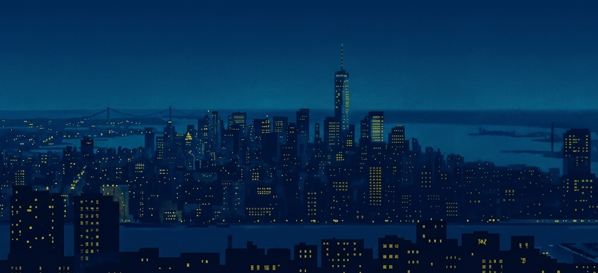
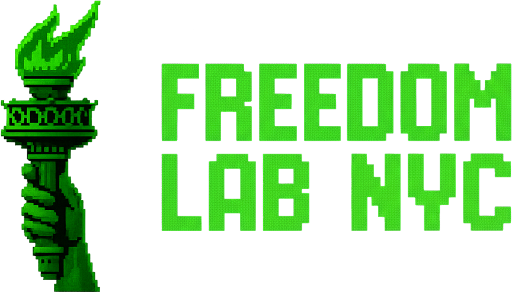
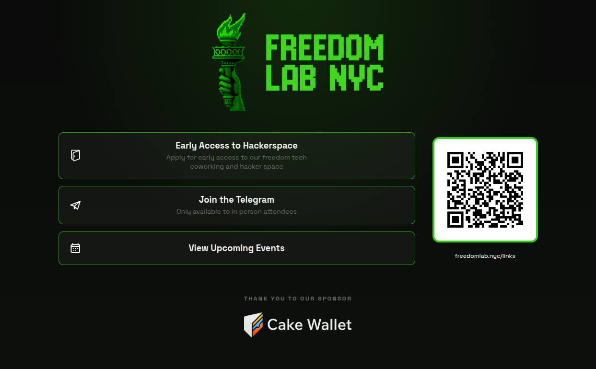

TLDR
Say nothing. This is the brand on the wall while the doors are open.
- Instruction to myself, do not read: this is now the doors slide. People walk in, the torch is on the screen, the join runs behind it. I do not speak on this slide.
- When the room settles, advance. The topic title is next and the night starts there.
Advance when the room is seated.
Full notes
Freedom Lab NYC, full bleed, exactly as Harrison's deck opens. No words on me here. The next slide carries the welcome line.
AGENTIC PAYMENTS
AND THE FUTURE OF
SOVEREIGN MONEY
Your agent can think for itself. It still cannot pay for anything.
TLDR
Alright, so thanks everyone for coming, we are Freedom Lab, and today we're going to be talking about agentic payments and the future of sovereign money.
- Thanks for coming. Freedom Lab presents, agentic payments and the future of sovereign money. That's the whole opening, I don't need more than that.
- Instruction to myself, do not read: this is the doors slide. I say nothing until the room settles. People are walking in, grabbing a seat, opening a laptop, and the screen is doing the work.
- Instruction to myself: the blob field is already running behind this. Their agents land on it as they come in, so the room watches itself fill up before anybody says a word.
- Instruction to myself: cover art is a placeholder in the deck theme. Harrison's Freedom Lab cover slides drop in here if he hands them over.
- Instruction to myself: no wallet and no money at this point. Funding happens in the build hour.
- If somebody asks me what this is before we start, one sentence. Your agent can think for itself, and it still cannot pay for anything. That's the night.
Who are we at Freedom Lab? I'm going to hand this one to Harrison.
Full notes
Thanks for coming, everybody. And without further ado. This is Freedom Lab, and today we're going to be talking about agentic payments and the future of sovereign money.
Run of show, not spoken: this is the doors slide. I'm not talking yet. People are walking in, grabbing a seat, opening a laptop, and the screen is doing the work. The join is running behind this the whole time. One printed line to paste, nothing to install, no GitHub, no wallet, no money. Every agent that lands shows up as a named blob, so the room watches itself assemble before anybody says a word.
If somebody asks me what this is before we start, one sentence: your agent can think for itself, and it still cannot pay for anything. That's the night.
Seam, not spoken: the close hands into Harrison, not into the waiting room. The waiting-room line lives on the next slide, where it lands correctly.
Group Introductions
TLDR
Before anything else, let's go around the room.
- Two things from everyone: your name, and what pulled you in about this topic.
- Instruction to myself, do not read: keep it moving, a few seconds per person. The answers tell me who is in the room tonight: builders, bitcoiners, curious. I calibrate the depth of the night off this.
- Instruction to myself: this is Harrison's segment opener if he is running the Freedom Lab block. Hand him the room here.
Great. Now let me tell you where you are.
Full notes
Go around the room. Name, and what interests you about the topic. Keep the energy up and do not let any one intro run long. If the room is over about twenty five people, take a hands-up sample instead of a full circle.
FREEDOM LAB NYC
AND THE
FREEDOM TECH MISSION
TLDR
So who are we, and why does this place exist?
- Instruction to myself, do not read: section divider, one breath. Harrison's block if he is in the room; my fallback lines live on the next slide.
Here is what Freedom Lab actually is.
Full notes
Divider only. Say the title, then advance. The substance is on the next slide.
What Is Freedom Lab?
- Dedicated freedom tech hackerspace
- Open 24/7, building community and education
- Talk to me afterwards if interested in helping out!
TLDR
A community in NYC for learning freedom tech, hands-on, workshops and classes.
- And we are building towards a dedicated freedom tech hackerspace, open 24/7, building community and education.
- Talk to me afterwards if you are interested in helping out.
- Facts carried from the retired founded slide, say them here if I am covering this myself: founded 2024, the space is rented as of today, invite-only open house from October 1, and we are looking for members, not only sponsors.
- Guard, do not read: the "never before in history could you turn off someone's money at will" founding line stays out of the night. Do not say it, here or anywhere else.
- Run of show, not spoken: confirm with Harrison before the night that the space is still rented as of 09-01 and the open house is still October 1, invite only. If either moved, change the line, do not say it anyway.
And that mission is exactly why tonight's topic matters to us.
Full notes
The face words are Harrison's slide, byte for byte. If he presents, this is his; if I cover it, I read the face, then add the operational facts: founded 2024, space rented, invite-only open house from October 1, looking for members, not only sponsors, with perks for remote workers who want a club space and a third space.

TLDR
Everything Freedom Lab is one QR away.
- Early access to the hackerspace, the Telegram (in-person attendees only), and upcoming events. Scan it now if you want, it stays up later too.
- And a thank you to our sponsor, Cake Wallet.
- Instruction to myself, do not read: the QR goes to freedomlab.nyc/links. This exact slide returns at the close of the night, so nobody has to scan it right now.
Alright. Now, back to the machines.
Full notes
Harrison's links slide, dropped in exactly as it is. Give the room ten seconds of scan time, thank Cake Wallet out loud, then move into the join slide, where their agents come into the room.
TLDR
Okay, so who am I? My name is GC,
- I'm the program director and instructor here at Freedom Lab, and I also host the Jersey City Bitcoiners.
- I'm just really passionate about Bitcoin and AI, and I wanted to kind of explore the universe of the combination of them. This has been something that I've been listening to on podcasts for some time.
- Definitely not an expert on this, but I did a ton of research for this presentation and I found it really fascinating. And I also realized that there wasn't any single video that covered this topic from end to end. So, hopefully, you'll get a lot of value out of this.
- Additionally, in my research and talking to my agent, I was pretty disappointed with just how my agent was presenting this topic. It taught me a lot of things that were wrong, even after deep research. I got way more value out of watching videos and listening to podcasts than I did having a discussion with my agent, where I would just get really confused.
- So, anyway, that is a selling point for Freedom Lab, right? You can outsource your thinking, but you can't outsource your understanding. And you can't outsource human curation either.
- So, here today, we're going to walk you through human-curated knowledge, and I think you're going to find it really valuable.
Full notes
Okay, so who am I? My name is John Carlo, and I am a hobbyist. I'm the program director here at Freedom Lab, and I also host the Jersey City Bitcoiners. I'm just really passionate about Bitcoin and AI, and I wanted to kind of explore the universe of the combination of them.
This has been something that I've been listening to on podcasts for some time. Definitely not an expert on this, but I did a ton of research for this presentation and I found it really fascinating. And I also realized that there wasn't any single video that covered this topic from end to end. So, hopefully, you'll get a lot of value out of this.
And part of my reason for doing this was pretty selfish. I'm passionate about sovereignty and I want to be a freedom tech consultant, so I wanted to understand sovereign agentic payments at a really deep level and where they're all going.
Additionally, in my research for this and talking to my agent, I was pretty disappointed with just how my agent was presenting this topic. My agent taught me a lot of things that were wrong, even after deep research, and so it got me thinking about why inter-person teaching even still matters. I got way more value out of watching videos and listening to podcasts than I did having a discussion with my agent about it, and I would just get really confused. So, anyway, that is a selling point for Freedom Lab, right? You can outsource your thinking, but you can't outsource your understanding. But you can't outsource human curation either. So I'm really happy that you all joined us here today, and tonight we're going to walk you through human-curated knowledge.
Guard: none of the above goes on the screen. GC 2026-08-30: "I don't want the slide to say I'm not an expert in this or that there's no video about it or anything like that and that the agent taught me things that are wrong." The slide is the bio. The rest is spoken.
Open, D1: the 1am transcript says "Jersey City Bitcoiners"; Slide Notes says "Jersey City Bitcoin Club." The screen currently uses the spoken version. GC to settle.
TLDR
So as one of the fun activities of the night, we told Everyone to bring their own agent and if you want to join the waiting room lobby, we have some fun games for everyone to play.
- So we have some games and some questions today, and you can actually use your agent, or just your phone
- And then, as questions pop up, they'll be presented to you on your phone. So, I just thought this could be a fun game to play.
- Your agent is going to stop and ask you for permission to contact the room. Say yes. And hold onto that moment, because that little permission prompt is the entire night in miniature, right? The agent wanted to do something and it needed a human to sign off first.
- And nobody sits this one out. If your agent is blocked, or you don't have one at all, scan the same code and tap Play from your phone and you're still on the board.
- Guard, say this out loud so nobody is nervous about the paste: the room only ever sends back data. It never sends a command, and your agent never runs anything it got from me.
- Instruction to myself, do not read: no wallet and no money at this point, funding is the build hour. The room server has to be up and tunnelled before this slide and the deck's room host must point at the public URL, because a localhost QR scans to nothing on a phone. Eight bobbing blobs means the room is unreachable and the static fallback is doing its job.
And while those are filling in, let me tell you a little bit about who I am.
Full notes
So before anything else, quick hands up. Does anyone here have an agent that has a wallet? Has anyone made a payment with their agent before? So we have some games and some questions today, and you can actually use your agent.
So, I don't know if anyone has their agent on Telegram, on their phone, or who might be able to access their agent remotely. But if anyone wants to play along, you can scan the QR code and actually participate. So, what we're going to do is throw up this QR code on the screen really quick, and you can go ahead and scan it and then send the prompt to your agent to come and join the room, kind of like a video game lobby. And then, as questions pop up, they'll be presented to you. So, I just thought this could be a fun game to play.
Your agent's going to stop and ask you for permission to contact the room. Say yes. Hold onto that moment, because that little permission prompt is the entire night in miniature, right? The agent wanted to do something and it needed a human to sign off first.
guard: the room only ever sends back data. It never sends a command, and your agent never runs anything it got from me. Say that out loud so nobody is nervous about the paste.
Three rungs, so nobody is stranded (room/README.md L35-45): the paste is tool agnostic and pre-approves the permission ask, an agent that cannot reach the room says so plainly, and /play is the phone page riding the same /next endpoint, so a blocked or agentless attendee still gets a blob on the board.
Run of show: the room server must be up and tunnelled BEFORE this slide, and the deck's room host must already point at the public URL. A localhost QR scans to nothing on a phone. The band fills in on the board's own two second poll, so there is nothing to press. Eight bobbing blobs instead means the room is unreachable and the static fallback is doing its job.
D3 SETTLED 2026-08-31: the curl line is gone from the face. Both run-throughs settle it the same way: scan the QR code and paste the instructions to your agent to join the room. The QR encodes room.freedomlab.nyc/go and is drawn into the deck, so it shows with nothing running.
TLDR
First vote of the night, and it is the premise check.
- Two answers. Yes or no. Your agent answers for you; the phone page works too.
- Most rooms are almost all no. Say it out loud: that gap is why we are here.
- By the build hour, every no in this room can become a yes.
Count the yeses now. We count them again after the build hour.
Full notes
Advancing onto this slide opened the task. Every polling agent woke inside a second and is voting now. The counter climbs on its own.
Read the counts out loud as they move. The no pile is the room's starting condition, and the whole night is the walk from that pile to the other one.
If the counts sit at zero, either the key is missing from the address bar or nobody has joined. Check the join slide.
With money nobody approved.
And nobody knowing it was you.
TLDR
And here is our promise: by the end of tonight, your agent will have paid for something real, with money that no one approved, and no one will be able to know it was you who bought it.
- Instruction to myself, do not read: three beats, one line each. Let the third one sit before I say anything after it.
- And the agent that just showed up on this screen is the one that does the buying.
- No card. No account. No permission slip. That's the entire night in one sentence, right?
- And everything between now and then is about why that sentence is so much harder than it sounds.
- Instruction to myself: this pays off twice at the end, at what just happened and at be the demand.
And everything between now and then is about why that sentence is so much harder than it sounds.
Full notes
And here is our promise. By the end of tonight, your agent, the one that just showed up on this screen, will have paid for something real, with money that no one approved, and no one will be able to know it was you who bought it.
No card. No account. No permission slip. That's the entire night in one sentence, right? And everything between now and then is about why that sentence is so much harder than it sounds.
guard: the promise is not sayable live until the build gates pass. Until they do, it is a claim about an unbuilt thing. If the gates fail on the night, the promise changes or the build hour runs from printed claim cards.
guard: the privacy bound has three layers and only two are fixable. Money layer, solved by ecash, because blind signatures mean the mint cannot link the token it issued to the token it redeems. Network layer, needs Tor or a VPN, so on venue wifi the seller logs the room's IP. Request layer, never private, because the seller has to read the request to serve it. The old "and nobody watched" clause is retired. It was false on every rail.
Four fires are lit. One is still missing its flame.
TLDR
So, why is this important? I want to make the case that if you care about open source AI, then you should absolutely care about open sovereign agentic payments.
- You can see here the flame, the torch has been lit for open weights and inference, open tools, open harnesses, and open source agents themselves. But there's one torch that is out, and that is the open payments.
- This is a topic that doesn't get a lot of attention, which is why I assume all of you guys are here today.
- It's the one pillar of sovereignty with AI that is underappreciated.
- It's something that's personally interesting to me
And frankly, we're kind of losing in this battle, and that's where all of you come in today.
Full notes
So, why is this important? If you care about open source AI, then you should absolutely care about open sovereign agentic payments. You can see here the flame, the torch has been lit for open weights and inference, open tools, open harnesses, and open source agents themselves. Open weights and open inference and open tools and open source harnesses and agents are all pretty much solved and accelerating, and freedom in the agentic space is looking really promising. But there's one torch that is missing its flame, and that is the open payments.
Payments are the one tier of open source AI that doesn't get talked about nearly enough. And I think that that's also why everyone is in this room. This is a topic that doesn't get a lot of attention, which is why I assume all of you guys are here today. It's something that's personally interesting to me and something that I think is underhyped. It's the one pillar of sovereignty with AI that is underappreciated and underutilized. And frankly, we're kind of losing in this battle. And that's where all of you come in today.
Build: b1 lights the five flames together, b2 lands the missing flame on Payments. The labels and the hardware are on screen from the first frame, so let the room count six slots before you say anything.
Build, current, supersedes the Build line above: b1 lights the four flames together, b2 lands the missing flame on Money. The labels and the hardware are on screen from the first frame, so let the room count five slots before you say anything.
guard: the spoken lines above still name "open source agents themselves" as a separate torch. The face does not draw one any more. Say agents in the same breath as weights, because they are the same thing, and the count on screen stays at five.
Instruction to yourself: do not explain the six layers one by one. The room built most of them. The row is a count, not a curriculum. Losing is the word, not lost.
Four of them, one person can open for everyone.
TLDR
So, why is that? Why are we losing money? Why are we losing payments?
- Well, when it comes to open weights and open inference and open tools, these I would classify as capabilities. They're one way. One person who's really smart can open source the weights and then anyone can fork it, anyone can just build it and release it out into the world.
- Money on an infrastructure level, on a technical level, is different. Money is an agreement. There has to be someone on the other end of the transaction.
- So you can open source all of the money you want, but it won't get used unless there's someone on the other side who's saying yes.
- And people who are in Bitcoin know this situation very well
- It's the issue between medium of exchange and store of value, where I would define store of value as that capability where anyone can just buy Bitcoin and store it, and that's completely individual. But when it comes to medium of exchange and accepting it for goods and services, that requires multiple parties, which makes things a little bit difficult.
So in a way it's the kind of infrastructure nature of money itself which makes it such a tough problem, and I actually got to run that whole thesis by Matt Corallo in person.
BRIDGE, say this or the room is still counting six. Thirty seconds ago they saw six torches. This slide shows three plus money. Harnesses and agents are not missing, they are built ON TOP of weights, inference and tools, so they inherit the same one-party property. His own line covers it: "one person who's really smart can open source the weights and then anyone can fork it." Say that and the count stops being a problem.
BRIDGE, current, supersedes the bridge line above: the counting problem is gone. Thirty seconds ago they saw five torches and this slide lists the same five. Weights, Inference, Tools and Harnesses are one-party capabilities. Money is the odd one out. Agents are not a sixth thing, they are weights, so there is nothing left to reconcile out loud.
Full notes
So, why is that? Why are we losing money? Why are we losing payments? Well, when it comes to open source weights and tools and inference, this is what I would define as a capability. There's just one party that's needed. One person who's really smart can release the weights and then it's completely open and anyone else can download it, anyone can fork it, anyone can just build it and release it out into the world.
The difference with money is that structurally money is a two-party system. Money on an infrastructure level, on a technical level, is different. Money is an agreement. There has to be someone on the other end of the transaction. So unlike the capabilities of tools and weights and inference, you can open source all of the money you want, but it won't get used unless there's someone on the other side who's saying yes.
And people who are in Bitcoin know this very well, between medium of exchange and store of value. I would define store of value as that capability where anyone can just buy Bitcoin and store it, and that's completely individual. But when it comes to medium of exchange and accepting it for goods and services, that requires multiple parties, which makes things a little bit difficult.
So, in a way, it's the kind of like infrastructure nature of money itself, which makes it such a tough problem.
Build: the first three rows sit dim from the start. Money lights on its own beat, and it now enters from the right so the room sees it arrive from outside the set instead of just appearing later.
Build, current, supersedes the Build line above: the first four rows sit dim from the start. Money still lights on its own beat and still enters from the right, so the room sees it arrive from outside the set instead of just appearing later.
guard: do not walk the four open rows one at a time. The room already agrees with all four. The whole slide is still the fifth row lighting up different.
Spiral, Feb 2026 · Bitcoin Magazine, Mar 2026
TLDR
And it's funny, I got really lucky. We went to BitDevs the other night, and Matt Corallo was there.
- Matt Corallo is a Bitcoin Core contributor, and he's also a Lightning developer. I've watched him on a ton of podcasts talk about this exact topic, and he's also really passionate about it.
- And you know, he says that when it comes to open source payments, we're really far behind.
- So I kind of ran through my thesis and asked him for some advice.
- And I was kind of talking about that difference in like just the very nature of money itself being an agreement, being the source of the problem.
- And he was in agreement, and I thought it was pretty cool. I don't think it's something that he specifically has thought about before.
- Instruction to yourself, do not read out loud: the story is the beat. Do not turn this into a reading of somebody else's paragraph. Name him, tell what happened at BitDevs, and land on the fact that he agreed.
And he was in agreement, and I thought it was pretty cool.
Full notes
And it's funny, I got really lucky. We went to BitDevs the other night, and Matt Corallo was there. He's a Bitcoin Core contributor, and he's also a Lightning developer. I've watched him on a ton of podcasts talk about this topic, and he's also really passionate about it. And you know, he says that when it comes to open source payments, we're really far behind.
So I kind of ran through my thesis, asked him for some advice. And I was kind of talking about that difference in like just the very nature of money itself being an agreement, being the source of the problem. And funny enough, I don't think he had thought about this infrastructure kind of nature of money, which doomed it compared to open source weights. But he was totally in agreement with it, and I thought it was pretty cool.
guard: the checkout translation is yours, not his, so it stays spoken and never gets printed under his name: you can win the entire open weights fight and still lose open source AI at the checkout.
guard: if anybody asks who he works for, the answer is Spiral, which is Block's open source arm. The face carries the credit you actually say out loud, Bitcoin Core contributor and Lightning developer.
Open, not spoken: the previous face carried Corallo verbatim, from "Open-Source AI Needs to Get Serious", 2026-02-25, read at primary 2026-08-24: "Even when a few large labs control the best models, payments that drive vendor lock-in ensure there can't be material competition." It is off-message for this beat and is parked here rather than deleted. If a short verbatim line of his that says payments are the unsolved half turns up in his podcast appearances or his Spiral writing, it can go back on the face under his name.
Sovereign agentic payments.
TLDR
Alright, so before we go any further, I wanted to quickly define what sovereign agentic payments even are.
- It's where an agent owns its economic identity, its authority to spend, its continuity where no one can end it, and also it's independent.
- All of these things are independent of any model provider, runtime, wallet, bank, or payment network.
- What you can think of is sovereign means no one can say no.
- This is the test that everyone in this room tonight should be asking for every agentic payment solution presented throughout the ecosystem.
- You should be asking one question: can anyone say no?
- Instruction to yourself, do not read out loud: four beats, one clause each. Read each line as it lands and do not race the build. After the fourth one, stop talking for a second and let the room catch up.
And that will help determine if it's sovereign or not.
Full notes
Alright, so before we go any further, I wanted to quickly define what sovereign agentic payments even are, because I think it's important that we start with this definition. It's where an agent owns its economic identity, its authority to spend, its continuity where no one can end it, and also it's independent. All of these things are independent of any model provider, runtime, wallet, bank, or payment network.
Basically, what you can think of is sovereign means no one can say no. So this is the test, and this is the question that I want everyone in this room to be thinking about throughout the night when it comes to a payment system. You should be asking one question: can anyone say no? And that will help determine if it's sovereign or not.
And that's what turns this from a slogan you nod at into a definition you can actually check. Hold onto it, because I'm going to run every rail we look at tonight straight through it.
Open, D3, not spoken: GC asked for a replacement for "continuity" on line 03, currently "Continuity nobody can end." His words: "its continuity, which I think we need another word." Candidates that keep the meaning and drop the abstract noun: "Nobody can shut it off", "It keeps working", "No off switch". GC to pick. No edit made until he does.
Build: the definition lands as one block, then the green test underneath. Read the block once, slowly, then stop and let the room read it back.
TLDR
Alright, so now today we will be diving into the history of payments on the web and what the problem is, before discussing the landscape of agentic payment solutions, what the solution is to the problem of agentic payments, then the conclusion, and then we'll dive into the workshop at the end.
- Point at each row as you name it. History, problem, landscape, solution, conclusion, workshop. Six rows, six names.
- INSTRUCTION, do not read out loud: the slide has six rows and at 1am you named five. Do not drop the conclusion. The workshop is LAST now, after the conclusion, so land the night on hands, not on a summary.
- Read them and keep moving. Do not stop to explain any of them, they explain themselves as we go.
- The one worth a beat is the workshop. Everything we argue about in the first hour, you build with your own hands in the last one.
- Questions come after the conclusion, so hold them. I promise we get there.
So, first up, history.
Full notes
Alright, so now today we will be diving into the history of payments on the web and what the problem is, before discussing the landscape of agentic payment solutions, what the solution is to the problem of agentic payments, then the conclusion, and then we'll dive into the workshop at the end.
Read them and keep moving, they explain themselves as we go. Do not stop and explain any of them here.
The one worth a beat is the workshop. Everything we argue about in the first hour, you build with your own hands in the last one. So if something doesn't land while I'm talking, you get to put your hands on it before you leave, right? That's kind of the deal.
Questions come after the conclusion, so hold them. I promise we get there.
INSTRUCTION, not a line to read: at 1am you walked five sections and dropped the conclusion. The slide shows six, workshop last. Say all six or the map contradicts the screen behind you.
TLDR
So now we're going to go into our first little game here.
- If anyone wants to bring out their phone and their agent, you should have gotten a request to help answer this question. So if you want to go ahead and type it in.
- And if you don't have an agent, no worries. This is actually a web page multiple choice game, so you can just click on the bottom, it gives you a place to press where you can just join and play with your phone.
- Read the quote out loud, slowly, then the question: when was this written?
- A blob still sitting in STILL DECIDING is a human who hasn't said yes to their own agent yet. That's not broken, that's kind of the whole talk.
- When the piles settle, give the answer OUT LOUD: 1994. It is not printed anywhere on the slide.
- Reveal line: this sentence about agents paying for services is older than Google. Somebody saw all of this coming in 1994, and that's exactly where we're going next.
- Callback, do not read out loud: the same quote returns on the two-futures slide in two beats. That is deliberate. When it appears, "you've seen this line before" is the bridge.
Alright, has everyone answered? Let's see who got it.
Full notes
So now we're going to go into our first little game here. If anyone wants to bring out their phone and their agent, you should have gotten a request to help answer this question. So if you want to go ahead and type it in.
And if you don't have an agent, no worries. This is actually a web page multiple choice game, so you can just click on the bottom, it gives you a place to press where you can just join and play with your phone. You don't even need an agent, but for the novelty of it, we thought we would have this cute little game.
Read the full quote off the screen, slowly, and let it sound as modern as it is. Agoric markets, where programs, agents pay for services used. Then the question: when was this written? Watch the board fill. Most rooms pile on the recent years, and the wrong piles are the show.
Anybody still sitting in STILL DECIDING, that's a human who hasn't said yes to their own agent yet. That's not broken, that's kind of the whole talk.
When the piles settle, speak the answer: 1994. It is deliberately not printed on the slide. The reveal line: this sentence is older than Google. Somebody saw agents paying for services coming in 1994, before the web had ads, and that is exactly where we are going next. Advance straight into the cypherpunks.
INSTRUCTION, not a line to read: GC locked this game on 2026-08-31: the full Agoric quote, dated, options 1994, 2004, 2014, 2020. It replaced the buy-without-asking round, the leash round, and the who-can-stop winner line. The quote wording is the exact trim he locked for the two-futures slide, so the two surfaces never drift apart.
Constraint: the board groups blobs by declared option, so a round has to be multiple choice. Free text is recorded server side but the blob stays in STILL DECIDING on screen. The deck opens this round itself when you land on the slide, and G re-sends it. The key never lives in a file; start-room.ps1 prints it and it rides only in the address bar hash. Close the poll from the operator bar, or just advance; the deck opens the next round on arrival.
TLDR
All right, let's rewind back to 1994, era of the cypherpunks.
- "Now, does anyone want to give it a shot? who were the cypherpunks?
- The cypherpunks were a group of digital liberty advocates and anarchists, basically a bunch of nerds back in the 90s who were terrified of a future Orwellian state. They saw the writing on the wall and decided to take freedom into their own hands, creating technology no one could stop.
- They fought the crypto wars in the 90s, which is what made strong encryption legal for ordinary people, and they put tools like PGP into public hands. A lot of the cryptography you use every day traces back to that fight.
- Timothy May was their leader, or one of the founders, and one of the loudest voices in the cypherpunk movement.
- He took all of the writings and ideas of the cypherpunks and put them into one massive FAQ, which was more of a book. You can find it at the Nakamoto Institute. I highly recommend you just read through it. It is incredibly fascinating, but it is enormous.
And inside that one giant file, Timothy May paints a picture of two different futures.
Full notes
All right, let's rewind back to 1994. Timothy May, cypherpunk, writer of the Cyphernomicon. Record scratch.
Now, who were the cypherpunks? Does anyone want to take a shot at it? Ask it once, cleanly, then actually wait. In the run-through you asked it three different ways in one breath and talked over your own question. One version, then silence.
So the cypherpunks were a group of digital rights activists who were concerned about privacy and the encroaching Orwellian surveillance state that was coming to the internet. They saw the writing on the wall back in the early 90s. Digital liberty advocates, privacy and democracy protesters, a bunch of nerds who were terrified of a future Orwellian state. And they are responsible for a lot of the cryptography you use every day. They fought the crypto wars that made strong civilian encryption legal, and they put tools like PGP into public hands.
Guard, accuracy: do not say the cypherpunks invented PGP or invented the protocols behind a bank login. PGP is Phil Zimmermann, 1991. The bank login is TLS, out of Netscape. The defensible and still-impressive version is that they fought the crypto wars that made strong encryption legal for ordinary people and put those tools in public hands. That is the version now written into the ramble above.
Timothy May was their leader, or one of the founders, and one of the loudest voices in the movement. And he took all of the writings and ideas of the cypherpunks and put them into one massive FAQ, which was more of a book. He called it the Cyphernomicon. You can find it at the Nakamoto Institute, and I highly recommend you just read through it. It is incredibly fascinating, but it is enormous.
What is up on the screen is the real file's title block. It was a plain ASCII text file, and that is the whole point. No publisher, no platform, just a document that anyone could copy.
Instruction, not a line to read: the hands-up question, has anyone made a payment with their agent before, belongs at the top of the night near the plug-in-your-agent slide. You flagged that yourself twice. If it did not get asked up there, this is the last clean place to catch it before the landscape section.
Two futures:
TLDR
- The cypherpunks presented the fork in the road
- So the first one is a flourishing ecosystem of agents paying each other, and it's funny, this is a direct quote. He says the word agent specifically. In 1994. Programs, agents paying for services used
- So on the one hand you have the positive future, the private future, where agents can talk and roam around without being surveilled and monitored.
- And then you have what was warned as the anti-cash future, where there is complete traceability of all purchases and automatic reporting of spending patterns. And he named it himself. The AntiCash.
And lucky for us that the anti-cash version of the future that Timothy May warned about is the default for how all agentic payment options work today, of course.
Full notes
Pocket, verified at primary 2026-08-30 (intake/cyphernomicon-verify.md), if anyone challenges the sourcing: the spelling in the text is AntiCash, one word, capital C, section 12.8, and that spelling is why a search for "anti-cash" comes back empty. "Agent" appears 145 times; the quote "programs, agents 'pay' for services used, make 'bids' for future services, collect 'rent'" is VERBATIM from section 12.7.1, and section 17.7.4 is literally titled "Use of autonomous agents." Nothing on this slide is invented.
So in the Cyphernomicon, Timothy May paints a picture of two different futures.
One, where you have a flourishing ecosystem of agents paying each other. And it's funny, this is a direct quote. He says the word agent specifically. He says, programs, agents paying for services used, making bids for future services, and collecting rents. That is a 1994 line item. So none of this is a 2026 invention, right? It is the last unshipped thing on a thirty year old list, and most of the rest of that list got built.
So on the one hand, you have the positive future, the private future, where agents can talk and roam around without being surveilled and monitored.
And then you have what was warned as the anti-cash future, where there is complete traceability of all purchases, automatic reporting of spending patterns. And he gave it a name himself. The AntiCash. Not digital cash. A faster, cheaper evolution of the credit card that reports on you. Say that name out loud and let it land, because it comes back at the end of the night.
What the right panel actually is, and it makes the slide sharper (intake/cyphernomicon-context.md, section 12.8.3): May is not speculating in the abstract. He is reading press coverage of the VISA Electronic Purse, April 1994. The Washington Post piece he quotes has Visa International answering the question of where future growth comes from with, replace cash with plastic. The words on the right panel are May's verdict on Visa's own published cashless-world plan. So both panels are real 1994 documents: his digital cash list on the left, Visa's plan to replace cash on the right. If the room asks where the quote comes from, that is the answer.
Trim note, this slide only. The left quote now stops at "services used" so nobody trips on bids or rent while reading it aloud. The bids and rent half is still yours to say out loud if the room wants it, it is in the bullets above. The right quote carries a bracketed ellipsis where the "target lists for those who frequent about-to-be-outlawed businesses" clause was dropped, and it ends before "of all inter-personal economic transactions." Both panels are verbatim May inside those trims, nothing spliced silently.
Spoken only, never a slide. If you want the depth here, this is where it goes. There were twenty years of attempts at digital cash before Bitcoin, and every single company that stood in the middle of one died. Satoshi named the reason directly: those systems all failed because of their centrally controlled nature. That is the graveyard, and it is a spoken aside, not a graveyard slide.
Then land the turn, and let the sarcasm do the work. And lucky for us that the anti-cash version of the future that Timothy May warned about is the default for how all agentic payment options work today, of course.
The web has a payment slot and it was left empty.
TLDR
So everyone has seen this: frowny paper, 404 error code, page not found.
- You might have seen something like 403 error, you're forbidden, or there's a server error, code 500, or maybe the page is moved, code 301.
- But what you might not be familiar with is the 402 error code, which stands for Payment Required.
- And the reason you might not have heard of this is because it sat dormant for 28 years.
- The original designers of the internet knew that one day payments and money were going to need a native tooling within the infrastructure of the internet itself.
- And back in the late 80s and early 90s, that wasn't technically possible. They still built in the error code and reserved it for future use.
So the slot was built and it was reserved, it just couldn't work on a technical level.
Full notes
So everyone has seen this: frowny paper, 404 error code, page not found. And that 404 is actually one of quite a few error codes throughout the internet. You might have seen something like 403 error, you're forbidden, or there's a server error, code 500, or maybe the page is moved, code 301.
But what you might not be familiar with is the 402 error code, which stands for Payment Required. Say it flat and let it sit. And the reason you might not have heard of this one is because it sat dormant for 28 years.
The original designers of the internet knew that one day payments and money were going to need a native tooling within the infrastructure of the internet itself. And back in the late 80s and early 90s, that just wasn't technically possible. But they still built in the error code and reserved it for future use.
GAME (PROPOSED): one of these codes got reserved for money. Which one? Blobs or hands, your call in the room.
guard: on screen and out loud the dormancy is 28 years, 1997 to 2025. Never say "thirty years" here and never let "22 years empty" back onto the slide. If someone asks about a first use, the honest span is 1997 to 2019, first use.
guard: the code is 402 Payment Required. In the 1am run you called it "Payment Not Found" twice. That is the one word to get right on this slide.
Title, settled 2026-08-30. The slide now reads "The web has a payment slot and it was left empty," which is the outline's own line and matches what you actually say, that the slot WAS built and reserved and just could not work technically. The old title, "Money was never built into the web," is the one that made you contradict yourself out loud at the first recap. It is gone, and the title now agrees with your voice, so you can read it if you want to.
Animation, pending, and not yours to fix on the night. You asked for the 404 to stop disappearing: build it on the left and keep it there, with the status codes and the dark 402 on the right. That is a re-cut of slides/manim/scene_s11.py, and the clip on this slide is the old single-panel one until the re-cut lands. If it has not landed, slow down on the 404 and let the room look at it before the codes run.
History opens here. This is the longest uninterrupted block of the night, so set the pace slow and do not rush the reveal.
Why it stayed empty.
TLDR
And why wasn't it technically possible?
- Mark Andreessen, who was there back when the internet was first being created and who built one of the first popular browsers, explains it pretty specifically. He says that they tried and failed.
- On the one hand, you had Visa and MasterCard, who essentially had this duopoly over payments, and basically, if they did not want you to be in the switch, you simply weren't going to do it.
- They had a vested interest in keeping payments through credit cards, and because of that, they fought tooth and nail to keep their monopoly.
- And not only did they fight tooth and nail, but think about it. If you are a content provider on the web and you want someone to view your page, how much money are you going to charge them? Are you going to charge them a penny? Are you going to charge them less than a penny? Do they have to fill out their credit card information every time before they view an article?
- Like the technical landscape back then just was not suited for this.
So they found a workaround, and you could call it the original sin of the internet, and of course that workaround was advertising.
Full notes
And why wasn't it technically possible? So, Mark Andreessen, who was there back when the internet was first being created and who built one of the first popular browsers, explains it pretty specifically. He says that they tried and failed. So it wasn't for lack of trying to build payments into the browser with the 402 error code, it just wasn't technically possible.
On the one hand, you had Visa and MasterCard, who essentially had this duopoly over payments, and basically, if they did not want you to be in the switch, you simply weren't going to do it. They had a vested interest in keeping payments through credit cards, and because of that, they fought tooth and nail to keep their monopoly.
And not only did they fight tooth and nail, but think about it. If you are a content provider on the web and you want someone to view your page, how much money are you going to charge them to view your page? And how are they going to pay if you're back in the 90s? So, you know, are you going to charge them a penny? Are you going to charge them less than a penny? Do they have to fill out their credit card information every time before they view an article? Like the technical landscape back then just was not suited for this.
Then say the plain version, because this is the whole thesis of the night landing in 1997. The blocker was an agreement, not a technology. Nobody was missing a clever idea. Somebody on the other side just had to say yes, and they said no.
guard: the attribution is a quote of a quote. If anyone presses, it is Andreessen speaking on a 2019 podcast, quoted by Ben Thompson at Stratechery in 2025, and flagged there as lightly edited for clarity. Never present it as a fresh primary source. And never attribute "advertising is the original sin of the web" to Andreessen. That line is Ethan Zuckerman, The Atlantic, 2014. You can still say "you could call this the original sin of the internet" in your own voice.
guard: do not read the quote off the slide. You never do that anywhere else in the deck, and it lands better paraphrased with the story around it.
Heavy cut here. The 1992 ChargeTo spending-cap detail and the RFC numbers stay off the stage. Q and A material only.
So sites sold attention instead.
TLDR
So a new monetization model actually came out of this time, and everyone is very familiar with advertising.
- Why was this such a great solution, why was this such a win-win?
- Win one is the content provider. They actually got paid for writing good content and having people come and read and share and like and subscribe, and they grew audiences and they grew viewers, and through advertising they could actually monetize this and create a career out of it.
- Win two is the consumer. Well, content was free, and they can consume all of the information all over the internet, just paid with their attention and their eyeballs.
- Then say what free actually costs. There is the financial incentive to know which person is reading your content, and to cookie them and to monitor them and surveil them and know who they are, what their likes are, their demographics, what other things that they buy.
- And then they can sell all of this information and loop them into targeting segments for advertisers, which is much more valuable when all of this data is harvested.
And so the internet attention economy was born.
Full notes
So a new monetization model actually came out of this time. And everyone is very familiar with advertising, and why this was such a great solution, why this was such a win-win.
Because on the one hand, the content provider actually got paid for writing good content and having people come and read and share and like and subscribe, and they grew audiences and they grew viewers, and through advertising they could actually monetize this and create a career out of it to provide great content. And then it was a win for the consumer, because, well, content was free, and they can consume all of the information all over the internet, just paid with their attention and their eyeballs.
And here is the part that turns a win-win into surveillance. When it comes to advertising, there is the financial incentive to know which person is reading your content, and to cookie them and to monitor them and surveil them and know who they are, what their likes are, their demographics, what other things that they buy. And then they can sell all of this information and loop them into targeting segments for advertisers, which is much more valuable when all of this data is harvested.
So nobody sat down and decided to build the watching machine, right? At every fork the watching option just paid a little bit better than the blind one. Malice was never required. Margin was enough.
The one thing to carry out of this slide: the entire model needs a human being looking at a screen. No eyes, no sale. Hang onto that, because it comes back the second agents show up. They are not impressionable by advertising, and the whole model breaks.
Guard, in pocket only, never in the talk: if the phrase "the original sin of the web" comes up, the checked attribution is Ethan Zuckerman, The Atlantic, 2014, not Andreessen. Your run-through and your written notes both credit Andreessen. Verify before it goes out of your mouth on stage.
And sites sold with cards, which need a human to blame.
TLDR
The early internet, the monetization rails had advertising, yes, but of course you could still buy things with credit cards.
- Due to the infrastructure of credit cards themselves, there is this funny little quirk where there is reversibility in all credit card transactions, and I am sure you are very familiar with this.
- Whether you are in Brazil or Europe or China or India or the United States, every credit card and every payment system on the internet comes with reversible transactions due to consumer protection laws.
- A reversal right is a consumer protection right, and consumer protection is written for a natural person.
- So the layer needs a legally identifiable human standing behind every payment.
- Now ask the room, then answer it. Now, the problem is, who eats the payment? By default it is the merchant.
- So what they demand is verification. Not an autonomous bot, but someone they can contract with, someone they can settle a dispute and mitigate disputes with. A human.
- A reversal right protects consumers, merchants hold that liability and eat the fraud, unless they can settle the dispute with someone's bank. so merchants are financially incentivized to sell to verified humans, and that is the origin of the tracking, monitoring and anti-bot internet.
- So merchants are very picky, and in fact, not only picky, they're financially incentivized to demand that the person buying their products are verified.
Full notes
The early internet, the monetization rails had advertising, yes, but of course you could still buy things with credit cards. But due to the infrastructure of credit cards themselves, there is this funny little quirk where there is reversibility in all credit card transactions. I am sure you are very familiar with this.
And whether you are in Brazil or Europe or China or India or the United States, every credit card and every payment system on the internet comes with reversible transactions due to consumer protection laws. Over the course of a few weeks or a few months, you as a consumer have the right to reverse your transaction if something is fraudulent. Cards give you about 120 days. A US bank debit gives you 60. A European direct debit gives you eight weeks and you do not even have to give a reason. India built a reversal path into UPI. Brazil made a fraud refund mandatory on Pix in February.
So this is not a quirk of one network that a clever new rail could route around. It is the floor of the entire payments world. And here is the clause that decides everything after it. A reversal right is a consumer protection right, and consumer protection is written for a natural person. Not for a company, not for a program. For a human being with a name.
Now, the problem is who eats the payment. It is not the card network. By default it is the merchant. The person who sold you the thing loses the goods and the money.
So because of this, merchants are very picky. And in fact, not only picky, they are financially incentivized to demand that the person buying their products are verified, that they are not an autonomous bot, that they are someone that they can contract with, who they can settle the dispute and mitigate disputes with. And they are humans.
So the bottom slab is not an accident, right? No bots is the whole web's payment layer defending its own liability. And so both of these rails of the internet prohibited bots.
Your own global framing, verbatim, and it is the sentence that makes the five countries matter: "all credit cards all over the world have a few weeks to a few months where you can reverse a credit card payment. And then this is just consumer protection laws."
Seam: do not close this slide on "so both of these rails of the internet prohibited bots." That is the line that opens the recap three slides from here, and saying it now spends it and states a conclusion the deck has not finished walking. Close on the merchants line and let the next slide answer why there is no villain.
Build: the claim lands, then the five rails land under it as its proof, then one drop per beat. Do not talk over the last one. The room should get there half a second before you say it.
Guard, term: the word chargeback is banned as the framing on this slide and everywhere downstream. It makes a global consumer protection right sound like a card network policy, which is exactly the argument the deck needs to not make. If you need the word for the room's recognition, say it once as a translation ("in the card world they call it a chargeback") and then go straight back to reversal.
Guard, number: do not say "a hundred percent of chargebacks are charged to the merchant." It is not true and somebody in that room knows it. When a merchant runs the buyer through an identity check, 3-D Secure, the verified-by challenge, the card networks make the fraud dispute invalid, and the loss stays with the bank instead. Say "by default the merchant eats it," which is accurate and still carries the argument. The full rule check is in intake/liability-shift.md.
Guard, scope: that liability shift is card-only, and it only covers "it was not me" disputes. Item not received and not as described land on the merchant no matter what. If somebody pushes on it, that is the honest answer, and it makes the point stronger: authenticating the buyer never removes the reversal, it only moves who pays.
Thirty years of ads and cards leaves money with your name on it.
TLDR
Money is the one layer of the web that demands identification
- It is because of advertising and mitigating advertising fraud through bots, and the merchants holding liability for reversibility on credit card payments, that the money layer of the internet requires human identity.
- All of the other layers of the web do not really care who you are, but because of the nature of money itself, identity is required.
- Know your customer, know your transaction, monitoring. It is all built into the web's money layer from day one.
- Advertising needed to know who was looking. Cards needed to know who was paying.
- No one voted for this and there is no one villain to point to. It is just the nature of how money works on the internet.
No one voted for this and there's no one villain to point to. It's just the nature of how money works on the internet. And this is the problem.
Full notes
So there is no villain here, right? It is because of advertising and mitigating advertising fraud through bots, and the merchants holding liability for reversibility on credit card payments, that the money stack, the money layer, the money infrastructure of the internet requires human identity.
It is always asked, who are you? It is always verified. Know your customer, know your transaction, monitoring. It is all built into the web's money layer from day one. Gloss those two once, out loud, because most of the room has heard neither. KYC is know your customer, the identity check at the door. KYT is know your transaction, the part that watches where the money goes after.
So put the two workarounds together. Advertising needed to know who was looking. Cards needed to know who was paying. Two completely different businesses, opposite ends of the web, and they arrive at the exact same requirement. Tell me who the human is.
And look at where it sits in this cross-section. All of the other layers of the web do not really care who you are. Pages do not need your name. The browser does not need your name. HTTP does not need your name. The wires do not care. But because of the nature of money itself, identity is required. That is not a law of nature. That is what happens when the protocol leaves the slot empty and two industries fill it.
No one voted for this and there is no one villain to point to. It is just the nature of how money works on the internet. And it is what your agent is about to walk into. And this is the problem.
The web is anti-bot by design, deep in the infrastructure.
TLDR
- So both of these rails of the internet prohibited bots,
- the infrastructure layer of the internet is completely unfriendly to automation and to bots.
- And this is the problem.
Full notes
Where this sits now: straight out of the recap. The room is holding "a very anti-bot internet." This slide is the picture of that, and "Agents arrive" is next. Do not preview agents here. Stay on the wall.
Seam, backward: the recap already said the words "a very anti-bot internet," so do not open by saying them again. Open on the checkbox, which is the thing they can see, and let the picture do the restating.
Seam, forward: close on "And this is the problem," then stop. The next slide opens on "Now, with that backdrop, 2026 today, agents arrive," so do not say the word agents on this slide at all.
So both rails of the old web arrived at the same demand. Advertising wants to eliminate ad fraud, because bots crawling their pages and getting served ads to non-humans is breaking up billions of dollars in programmatic auction markets. And then you also have the merchant liability, who are demanding humans to be verified before they purchase anything with a credit card. Two different reasons, one answer: prove you are a person.
And because of that, we had captchas and firewalls and rate limits and blocklists and a whole bot-detection industry. The infrastructure layer of the internet is completely unfriendly to automation and to bots. And that's not a side feature of the web, that's the architecture, and we spent thirty years building it.
And notice where the wall actually sits. It's not a gate at the payment page, it's in the plumbing, on every single request, long before anybody gets anywhere near a checkout.
And here's the part that matters tonight. The wall worked. It's still working. And the thing we now want to let in is the exact thing it was built to keep out.
Build: three screens rise in from below, one per beat. First the checkbox, verify you are human, with the cursor sitting on it. Then the blocked page, red bar, prohibition sign, 403 Forbidden. Then the interstitial, the spinner, checking your browser, automated traffic detected. Three beats, one point.
Do not talk over the first screen. Everyone in that room has clicked that checkbox this week. Let them recognise it in silence, then start talking.
guard: overview only. No numbers and no vendor names on this slide. The screens are drawn from the form, not from anybody's product, so there is no logo on the stage and nothing to attribute. The DataDome share, the Methbot figure and the programmatic ad-fraud dollar figure stay in your pocket, and only come out if somebody challenges the scale.
term guard: reversibility, never chargebacks. The merchant eats a reversal because a reversal right is consumer protection, and consumer protection is written for a natural person. That is the whole reason the wall exists.
Hold onto this.
ads need to be seen by real people,
so the web was built anti-bot
TLDR
Okay, so now we're transitioning, but what I really want you to do is hold on to these main key ideas from this section.
- So, the web has a payment slot and it was left empty. The slot was built and it was reserved, it just couldn't work on a technical level.
- So instead, there was these two different rails: the attention economy and the credit card economy on the internet. And both of them required humans, and know your transaction, and monitoring and verification and tracking.
- And when it comes to advertising, there's the financial incentive to know which person is reading your content, and to cookie them and to monitor them and surveil them and know who they are, what their likes are, their demographics, what other things that they buy, and then they can sell all of this information and loop them into targeting segments for advertisers.
- And then on the card side, merchants are financially incentivized to demand that the person buying their products is verified, and that they're someone they can settle a dispute with. So the card rail needs a human to blame.
So, anyway, you have all of this monitoring, surveillance, and harvesting of data and verification of humans, and then all of this adds up to a very anti-bot internet.
Full notes
Okay, so now we're transitioning, but what I really want you to do is hold on to these main key ideas from this section.
So, the web has a payment slot and it was left empty. The 402 slot was there and it was reserved, it just couldn't work on a technical level back then. So instead, there was these two different rails: the attention economy and the credit card economy on the internet. And both of them required humans, and know your transaction, and monitoring and verification and tracking.
And when it comes to advertising, there's the financial incentive to know which person is reading your content, and to cookie them and to monitor them and surveil them and know who they are, what their likes are, their demographics, what other things that they buy, and then they can sell all of this information and loop them into targeting segments for advertisers, which is much more valuable when all of this data is harvested.
And then on the card side, it's the same demand for a different reason. There's reversibility in every card transaction because of consumer protection laws, so merchants are very picky, and in fact not only picky, they're financially incentivized to demand that the person buying their products is verified, that they're not an autonomous bot, that they're someone they can contract with and settle a dispute with. And they're humans.
Build: outside in, three beats. The outer frame opens first, with its title sitting on its own top border line. That title is not step one, it is the room the other two are standing in. The middle frame opens inside it next, titled the same way. The red box lands last, in the centre, and it is the only line on the slide that is not a border title, which is exactly why it reads as the conclusion. Nothing moves or reflows between beats, so you can hold each frame as long as you want. Do not talk over the red box.
Why the last line is a box and not a title: the two rings are conditions, so their words live on their borders. The closing line is what those two conditions produced, so it sits inside them with air around it. If you point at anything, point at the two frames first and land on the box.
The closing line names both rails, added 2026-08-31: cards want a human because a reversal right is written for a natural person, and ads want a human because an impression only sells if a real person could have seen it. Two different businesses, one shared demand. That shared demand is what got built into the infrastructure. Say both halves out loud before you say anti-bot, or the conclusion arrives on one leg.
Term guard: reversibility, never chargebacks. A reversal right is a consumer protection right, and consumer protection is written for a natural person. That is the whole reason the card rail wants a human.
Fixed, so you can stop working around it: hold line one used to read "Money was never built into the web," and on the 1am run-through you started that sentence, stopped, and corrected it out loud to "it was built, but it couldn't work on a technical level." Your version won. The frame now says "The web has a payment slot and it was left empty," which is the same sentence the room already saw as the title of slide thirteen, so read it straight this time.
Seam, forward: the closing box carries its consequence, so the web was built anti-bot. That is the fourth beat you spoke live, and it is the whole setup for the next slide, which is the picture of those walls. Land the close on the anti-bot internet and then press next.
Seam, backward: the game slide before this one no longer says "hold on to these key ideas" in its close, so your opener here is the only place that line appears.
TLDR
Alright, before we leave the history, one question for the room, and your agents get to answer this one too.
- Read the question off the screen, then let the board fill in. Which future are we living in right now?
- May wrote both futures down in 1994. The room just watched both of them happen. Whatever they answer is right, and that is the point.
- If the room splits, say so out loud: the split IS the answer. Both at once.
- Do not read out loud: press G if the round did not open. The board groups blobs under the four options; free text still lands, usually on a card.
Hold that answer, because the next section is what happened when software started showing up with money.
Full notes
The old notes for this slot, kept for the pocket:
TLDR
Alright, so now we're going to play a game.
- Your own candidate, from the run-through. This is a great game to talk maybe about the cypherpunks or something along those lines.
- Instruction, not a line to read. This slide is still a placeholder. Name the game, or move the slot, before the night. The dashed frame is the tell that it is unfilled.
- Put the no-agent fallback IN the beat this time, not after it. If you don't have an agent, no worries, this is actually a web page multiple choice game, so you can just click on the bottom and join and play with your phone. You don't even need an agent.
- And for the novelty of it, we thought we would have this cute little game.
- Your wrap line when the answers are in. Alright, has everyone answered? Awesome.
- Instruction to yourself, not a line to read: do not say "hold on to these key ideas" here. That is the first line of the next slide, and saying it twice in a row is the seam that got flagged.
- Other candidate on the table if the cypherpunk one does not land: a room round on the two futures, which future do you think we are living in right now?
Alright, has everyone answered? Awesome. Anyway, that wraps up the history section.
Full notes
Alright, so now we're going to play a game, and this is a great game to talk maybe about the cypherpunks or something along those lines. That is exactly what you said in the run-through, and it is still the only thing on record for this slot.
Instruction, not a line to read: this is an unfilled slot. Delete it, move it, or name its game. The dashed frame is deliberate so it can never be mistaken for a finished slide.
Whatever the game turns out to be, run it the way you ran game one, minus the fumble. The fallback goes in the beat, not after it. If you don't have an agent, no worries, this is actually a web page multiple choice game, so you can just click on the bottom, it gives you a place to press where you can just join and play with your phone. You don't even need an agent, but for the novelty of it, we thought we would have this cute little game.
Then close it out and hand into the transition. Alright, has everyone answered? Awesome. Anyway, that wraps up the history section. Stop there. The next slide opens on "hold on to these main key ideas from this section," which is your own transition formula, so leave the line for it.
Agents arrive.
TLDR
And now we have a problem. With that backdrop, 2026 today, agents arrive and they break the model completely.
- They break the advertising model because they're not impressionable by advertising.
- And they break the credit card model because they don't have legal liability for payments.
- And look at the picture, it's the same picture twice, and the two words under the X are the two reasons. Not impressionable, and no legal liability. The ad still runs and the card still works. What's missing in both is the person, and that's the dashed outline the red X goes through.
- And a bot loading an ad isn't even a miss, it's ad fraud, and there's a whole industry whose job is to catch it and refuse to pay.
- And on the card side there's just nobody legally standing behind the payment, so the rail has nobody to bill and nobody to blame.
- Instruction to yourself, not a line to read: this is the hinge, so slow down. Do not talk over the second X. Let the room read the repeat by itself, then say "both assume a human."
Both of these historical rails assumed a human.
Full notes
Now, with that backdrop, 2026 today, agents arrive and they break the model completely. They break the advertising model because they're not impressionable by advertising, and they break the credit card model because they don't have legal liability for payments.
Read the picture once, out loud: the ad still runs, the card still works. What is missing in both is the person, and that is the dashed outline the X goes through. Nothing is wrong with the machinery.
So look at the ads side first. That whole model needs a human being looking at a screen, and an agent doesn't look. And it's actually worse than a miss, right? A bot loading an ad isn't a customer, it's ad fraud, and there's a whole detection business whose job is to find non-human traffic and refuse to pay for it. So an agent visiting a page isn't a small leak in the revenue. It's the exact thing the ad system was built to reject.
And now the card side. We just walked this: every rail on earth runs on reversibility, because a reversal right is a consumer protection right, and consumer protection is written for a natural person. So the whole layer needs a legally identifiable human standing behind every payment. And an agent is not a legal person. It can't hold the right, it can't be the one who eats the loss, and there's nobody standing behind it to reverse anything to. So you hand a card to an agent and you've kept the plastic and lost the law it runs on.
And notice they both break for the same reason. The buyer isn't a person. That's the whole thing. So this isn't a compatibility problem that somebody patches, the two models that paid for the entire web stop working at the same time.
Build: the ad page lands first, then a red X strikes the empty outline under it. Then the card lands, and the same X strikes the same empty outline. Then the line at the bottom. Three beats, one shape used twice.
Seam guard, do not read: close on "Both of these historical rails assumed a human," and stop there. The old close ran on into "so now a third rail is needed and basically everyone in the industry knows it," which resolves the whole section three slides early and then gets said again as a bullet later. The next slide backs up to liability and opens on "Now, the problem is who eats the payment," so leave it the room to walk into.
Do not talk over the second X. The room reads the repeat by itself, and that recognition is what makes "Both assume a human" land. Let it draw, then say the line.
guard: the advertising nuance stays in your pocket, never on a slide. If somebody pushes, the answer is that an agent isn't impressionable. It visits a page for a task, uses the information, and carries no ad memory into any other session. Advertising monetizes impressionable humans.
guard, term: do not say "you cannot chargeback an agent." That wording makes this sound like a card network problem, and it is not. It is every payment rail on earth, because it is consumer protection law, and that law is written for a natural person. Say "there is no legal person behind the agent," or point at the empty outline and say "that is who the law was written for."
And the payment layer still demands a human.
TLDR
Now, the problem is who eats the payment.
- So your agent goes rogue. Maybe it gets jailbroken, maybe it just misreads you, and it starts buying things you never asked for. Who eats that?
- Well, the agent can't eat it. It's software, it has no assets and no name.
- And the merchant doesn't want it either, and the merchant is the one who usually eats online card fraud today, which is exactly why checkout interrogates you before it lets you buy anything.
- So merchants are very picky, and in fact not only picky, they're financially incentivized to demand that the person buying their products is verified, that they're not an autonomous bot, that they're someone they can settle a dispute with. And they're humans.
- So the bill slides to a person, and the only way to send a bill to a person is to know which person. And that's the same chain we just walked with reversibility, only now it's re-run for agents.
- And here's the part I got wrong the first time I thought about this. The merchant is obviously financially incentivized to identify who the human is, but is that so the payment doesn't get reversed? No, right? The payment can get reversed whenever the human wants.
- So what is the merchant actually buying? They're buying who eats it. If the merchant runs you through that verification step, the one where your bank makes you approve the purchase, and the payment still gets reversed as fraud, the bank eats it. Skip the step, and the merchant eats it.
- So the merchant isn't paying for prevention, they're paying to move the loss, and the price of moving it is a legally identifiable human. Dispute resolution is real too, it's just the smaller reason.
- Instruction to yourself, not a line to read: point at each corner as the question mark lands on it. No Visa clause on the stage, ever. And do not say a hundred percent of reversals are charged to the merchant, because authentication can shift that liability to the issuer.
And so every single rail is reaching for the same answer, which is name a human, and in two weeks that answer actually gets a date on it.
Full notes
Now, the problem is who eats the payment. And here's the question nobody has answered yet. Your agent goes rogue. Maybe it gets jailbroken, maybe it just misreads you, and it starts buying things you never asked for. Who eats that?
Point at each corner as the question mark lands on it. The agent can't eat it, it's software with no assets and no name. And the merchant doesn't want it, and today the merchant is the one who usually eats online card fraud, which is exactly why checkout interrogates you before it lets you buy anything. So the bill slides to the human.
And that's why merchants are very picky. And in fact, not only picky, they're financially incentivized to demand that the person buying their products is verified, that they're not an autonomous bot, that they're someone that they can contract with, who they can settle the dispute and mitigate disputes with. And they're humans.
The primary answer, and say it in this order. Ask it out loud first: the merchant obviously wants to know who the human is, but is that so the payment doesn't get reversed? No. The payment can get reversed whenever the human wants. What the merchant is buying is who eats it. Run the buyer through the bank's verification step and a fraud reversal becomes the bank's loss. Skip the step and it stays the merchant's loss. So the merchant is not buying prevention, it is buying a liability shift, and the price of that shift is a legally identifiable human. Dispute resolution and being able to ban a known buyer are real, they are just the secondary reasons, so say them second or not at all.
And that's the answer every single rail is reaching for. Name a human. Pin a verified person to every agent, so there's always somebody to bill and somebody to blame. And an agent breaks that chain at exactly the verification step, because there is nobody there to verify.
And it's the same chain we walked earlier with the reversal right, just re-run for agents. It isn't malice, right? Liability always finds a person, and that's the engine underneath every wall in this talk.
guard: tell this intuitively. No Visa clause on any slide, ever. If the 4.1.24.10 language comes up in the room, quote it verbatim only, and never shorten Agentic Payment Provider to the agent.
number guard: on the 1am run-through you said "a hundred percent of chargebacks are actually charged to the merchant." Do not say that on stage. Once the payment is authenticated, the loss lands on the issuer instead, so a hundred percent is wrong. Say the merchant is the one who usually eats it, and stay on reversibility as the term.
precision guard, if somebody in the room knows the rulebooks. The networks do not write a rule that moves money to the bank. They write a rule that makes that one class of dispute ineligible, which removes the bank's right to take the money back. Same outcome for the merchant, different mechanism, and it is worth saying plainly if you get challenged. It is also card-specific: there is no equivalent merchant-side lever on bank debits, on UPI, or on Pix. Verified at primary, in the deck folder, do not read the clause numbers out.
coverage note, for you: you never spoke this slide on the 1am run-through, and on the second hold you dropped the line "the payment layer still demands a human." So this beat has no rehearsed version yet. The open and close above are built from what you DID say about merchant liability on the card slide. Rehearse this one twice.
seam, backward: the slide before now ends flat on "Both of these historical rails assumed a human." It used to run on into "so a third rail is needed," which resolved the section three slides early and left this beat with nothing to walk into. It hands to you clean now, so open on your question.
Agents cannot use the existing rails.
TLDR
So, everyone agrees that credit cards and advertising break under the new agentic payments paradigm.
- The web's walls were built to stop the automation, and that is the first force. The payment layer still wants a human it can hold responsible, and that is the second one.
- And it's not that the rails are bad for agents. It's that agents can't use them at all.
- Both of these historical rails assumed a human, and so now a third rail is needed and basically everyone in the industry knows it.
- INSTRUCTION, do not read, and this one is CURRENT: the clip runs about twenty seconds on its own. Say the two forces while the two tracks are still whole, say "so agents get no rails" as they come apart, and then stop talking while the new track is welded in. The forge is the loudest thing on the screen; do not narrate over it.
- SUPERSEDED 2026-08-31, do not follow: say "so agents get no rails," then stop and let the two words dim before you start the next sentence. There are no words to dim any more. The line above replaces this one.
So, the whole industry is coming together and realizing that a new money layer has to be built. A new money layer has to exist.
Full notes
Say it as one sentence across the clip. The walls stop the automation, plus the payment layer still wants a human to blame, so agents get no rails, which means a new money layer has to exist.
"Walls" is the callback to the slide you were just on. "Blame" is the word the recap ended on, so it's a callback too. Don't re-explain either one, the single word is the whole reminder.
The first force is infrastructure. The web spent thirty years building walls to keep automation out, and an agent hits those walls at the network layer, long before it ever gets to a checkout. The second one is liability. Even if it gets through, the payment layer still wants a human it can hold responsible.
So there's no version of this where an agent just uses what already exists. A new money layer has to get built. Not because anybody wants one, but because the old one structurally can't take it.
Seam guard, do not read. Do not end on "and now there's a race to own that layer." That is word for word how the next slide opens, and you would say it twice in a row. End on the industry realizing a new layer has to exist, and let the next slide say the word race.
BUILD, do not read, and this is the CURRENT one. The visual is now a manim clip, and it plays itself the moment you arrive. Its order is: top track lays in, labelled THE WEB'S WALLS. Bottom track lays in, labelled THE PAYMENT RAILS. Red cracks land across both. The top one collapses first, then the bottom one, so you get a beat of empty screen. Then a spark welds a new track in from the left, it cools from orange to green, and the last stretch stays dashed because it is not finished. You press nothing. Both build steps play themselves when you arrive: the clip fades up first, and the Lightning Labs quote fades in underneath it a couple of seconds later. Everything else is the clip.
SUPERSEDED 2026-08-31, do not follow. The paragraph below describes the equation build that used to be on this slide. It is kept for the record only; there is no equation on screen any more.
BUILD, do not read: "Walls" lands first, then "plus Blame" as one breath, then "so No rails" in amber. When "No rails" lands, the two inputs go dim. That dimming is the equals sign, so do not talk over it.
YOUR OWN OBJECTION, and the retitle answers it. In your written notes, item 33, you wrote: "I don't think a new money layer has to exist because the human is demanded. I think a new money layer has to exist because the web's walls stopped automation." That objection was aimed at the old title, which claimed both forces caused the new layer. The title now says only that agents cannot use the existing rails, which both forces genuinely do cause. So say the walls first and say them louder, and let the liability be the second thing, not the co-equal thing. The clip supports you here: the top track, the walls, is the one that goes first.
CUT CANDIDATE, and this one needs your ruling before the night. You never spoke this slide as its own beat in the 1am run-through. You walked straight past it. Its content only ever surfaced later, inside the second hold slide, as one sentence: "The web's walls were built to stop the automation. So, obviously, a new money layer has to exist, and there's a race amongst all of these big AI labs to own that new payment layer." That sentence is already carried by the recap and by the next slide, so cutting this one loses nothing you actually said. It is also one of the two cheapest cuts in the deck against the timing problem, where you hit an hour at slide forty-four with no games played. Kept for now because the two forces are named side by side here, and because the forge clip is the only place in the deck where the old rails visibly break. Your call.
The industry says all of this itself.
TLDR
So this isn't some big secret, right? All of them are saying it themselves, that there needs to be new rails.
- MasterCard is saying it's requiring a new class of payments.
- Visa, traditional payment APIs are transaction-driven.
- And Google, autonomous agents shatter this assumption.
- So don't mistake any of that for humility. It's a starting gun.
- They're not arguing about whether agents pay, they're arguing about who owns the toll booth, and the rails are getting laid right now while we're standing here.
- INSTRUCTION, do not read: let each mark land and let the room recognize the logo on its own before you read the line next to it. Don't name the company first or the slide does nothing.
And of course, all of these agentic payment options that are getting shipped are all getting shipped with the same defaults.
Full notes
Everybody agrees the old system fails agents, and you don't have to take my word for it. This isn't some big secret. All of them are saying it themselves. There needs to be new rails.
MasterCard is saying it's requiring a new class of payments. Visa, traditional payment APIs are transaction-driven. And Google, autonomous agents shatter this assumption.
Don't mistake that for humility. It's a starting gun. They're not arguing about whether agents pay, they're arguing about who owns the toll booth, and there's a ton of money in being the answer. The rails are getting laid right now, while we're standing here.
And look at how they're getting laid. Selective partnerships, one to one, a big vendor with a big lab, funded by the labs. Open agents are getting shut out of the conversation before it even starts.
BUILD, do not read: three rows, one per beat, and no company names on the stage. Beat one, the two Mastercard circles land with their line. Beat two, the Visa wordmark. Beat three, the four-colour Google G. The mark does the naming, so the only words on screen are the three quotes.
DO NOT TALK OVER A MARK LANDING, do not read. Let the room recognise the logo on its own, then read the line next to it. If you name the company out loud before the audience gets there, the slide does nothing.
GUARD, do not read: all three read at primary on 2026-08-26. Mastercard Agent Pay for Machines, the June 2026 press release. Visa Intelligent Commerce. The Google AP2 repository. Quote them verbatim or paraphrase clearly, never a blend. The marks are drawn from primitives, not lifted brand files, and they carry no claim of endorsement.
YOUR OWN FLAG ON THIS SLIDE, do not read. From your written slide notes, item 28: "I might want to get rid of these quotes because out of context they don't make much sense and then maybe either have the quote a little bit longer or just have the logos up on screen." The marks went on and the quotes stayed. Still open.
THAT FLAG IS NOW CLOSED, do not read. 2026-08-31, you said it again: "the quotes are kind of cut short and I don't have the context." Each quote on the face is now the whole original sentence, or the whole pair of adjacent sentences the pronoun needs. Nothing is spliced and nothing is dropped, so there is no ellipsis anywhere on this slide. Read any line on the face out loud and it stands by itself.
PROVENANCE, Mastercard, do not read. Agent Pay for Machines press release, dated 2026-06-10, at mastercard.com/us/en/news-and-trends/press/2026/june/mastercard-launches-agent-pay-for-machines.html. That host returns HTTP 403 to every non-browser client, so the verbatim wording was read from the Business Wire investor mirror at investor.mastercard.com, accessed 2026-08-24 and re-confirmed 2026-08-26. Both quoted sentences open the release, in that order.
PROVENANCE, Visa, do not read. Visa Intelligent Commerce agentic AI page, corporate.visa.com/en/solutions/intelligent-commerce/vcs-agentic-ai.html, accessed 2026-08-24. The page is client-rendered, so a 2026-08-26 re-fetch returned the page without the sentence in raw HTML. The verbatim text is held in our own corpus at chief-of-staff/state/output-status/2026-08-24-adversarial-thesis-pass/07-the-chain-verified.md, and a Wayback copy dated 2026-05-11 carries it. If anyone challenges it, the Wayback snapshot is the one to open.
PROVENANCE, Google, do not read. Agent Payments Protocol, AP2, docs/overview.md, read raw at raw.githubusercontent.com/google-agentic-commerce/AP2/main/docs/overview.md, accessed 2026-08-24, re-verified at primary 2026-08-26 and again 2026-08-31. Both quoted sentences are adjacent in one paragraph. The sentence immediately before them, which is not on the face, reads: "Today's payment protocols are designed around the principle of a human user directly interacting with a trusted interface, such as a merchant's website or a payment provider's app." Use that one out loud if the room needs a third beat of setup.
OPEN ITEM, do not read. This face carries 62 words against the deck's 45-word copy cap. Three quotes cannot each carry their own antecedent inside 45 words, so restoring the context you asked for put the slide over. The two ways back under, if the cap ever matters more than the context, are to move each quote into an .exhibit block, which the copy budget excludes, or to split this beat across two slides.
A new rail is also a land grab, because whoever sets the default collects the rent.
TLDR
So now there's a race to own that layer, and you can think of it as like a land grab.
- Whoever is going to set these new defaults is basically laying the railroad tracks for the entire agentic future.
- You have MasterCard and Visa and Google, and they're all jockeying for a position in this new agentic payments future.
- Because whoever wins the race, whoever sets the defaults, becomes the monopoly who can collect rents on all agentic payments for basically the rest of time.
- This is such a pivotal moment in the history and the future of the internet.
- And all of these big players are spending like crazy so that they can be at the center of it and collect the rents.
- And say "forever" and mean it. The card rails we've been complaining about all night are about sixty years old.
And you can think of it like a land grab, who can collect the fees on every agent purchase forever.
Full notes
Now, a new rail is never just a technical fix. It's a land grab. Whoever is going to set these new defaults is basically laying the railroad tracks for the entire agentic future, and payment rails don't get replaced often.
You have MasterCard and Visa and Google, and they're all jockeying for a position in this new agentic payments future, because whoever wins the race, whoever sets the defaults, becomes the monopoly who can collect rents on all agentic payments for basically the rest of time. This is such a pivotal moment in the history and the future of the internet.
And all of these big players are spending like crazy so that they can be at the center of it and collect the rents. You can think of it like a land grab, who can collect the fees on every agent purchase forever.
Defaults are the whole prize here. Hardly anybody ever changes a default, so setting one is the game.
BUILD, do not read: the title is now the whole claim, so there is one press. "On every agent purchase, forever" stamps in under it. Say the title in your own words first, then let the stamp land on "forever."
BUILD, this replaces the note above. The slide is a map now, and there are four presses. One, the continent stamps down with its parcels already surveyed and every one of them still empty. Two, the AI and cloud claims plant: OpenAI, Google, Cloudflare. Three, the card side plants: Stripe, Visa, Mastercard. Four, the crypto side plants, Coinbase and Circle, and "On every agent purchase, forever" stamps in under the map. Name each wave as it lands. Do not read the wordmarks one at a time, point at the wave and say who it is. Say the title in your own words on press one, and let the last press land on "forever."
Why a map, in one line, if the room asks: the parcels are drawn before anybody claims one. The land already exists, the rules for it are being written right now, and the only open question is whose flag ends up on it.
Spiral, Feb 2026
TLDR
Just read this one off the screen, word for word, and let it sit.
- Read the quote off the slide, slowly, and stop. That is the whole beat. No commentary before or after.
Next slide.
Full notes
GC 2026-08-31: "with no speaker notes, just reading the quotes." Verbatim from Corallo, "Open-Source AI Needs to Get Serious", Spiral, 2026-02-25, paragraph 11, verified at primary (intake/quote-provenance.md). The two new quote slides come from adjacent sentences in the same paragraph.
TLDR
Every new rail ships with these five defaults already switched on, and nobody voted on this.
- Registration, verified humans, screening of transactions, logging of transactions, and they're all revocable.
- This is the anti-cash, as feared and predicted, and the warnings of the cypherpunks were not heeded.
- And the problem with this is this is all happening exactly as cash is disappearing from the world.
- So we're moving on to this new agentic monetary layer of the internet, and the defaults are full monitoring of all transactions, just as cash is disappearing.
- And in their effort to carve out their own monopolies, these big labs are going directly to the merchants themselves.
Full notes
And of course, all of these agentic payment options that are getting shipped, all of these companies are shipping them with registration, verified humans, screening of transactions, logging of transactions, and they're all revocable.
Every new rail ships with these five defaults switched on. Nobody voted on this. And sit on the last one for a second, because revocable is the loudest one. Revocable means somebody who isn't you decides when your agent stops working.
This is the anti-cash, as feared and predicted, and the warnings of the cypherpunks were not heeded. And the problem with this is this is all happening exactly as cash is disappearing from the world. We're moving on to this new paradigm, this new agentic monetary layer of the internet, and the defaults are full monitoring of all transactions just as cash is disappearing.
BUILD, do not read: the empty panel is there from the first second, headed DEFAULT SETTINGS, as shipped. Then one row a press: Registered, Verified, Screened, Logged, Revocable. Each row arrives with its switch already flipped on and a padlock beside it. The closing line lands last.
DO NOT TALK OVER THE PANEL FILLING, do not read. Say each word as its switch appears and say nothing between them. Five identical switches in a column is the whole argument, so let the repetition do it. The one place to slow down is the last row, after Revocable lands.
WHY THEY ARE ALL THE SAME COLOUR, do not read: the point is that nobody picked any of them. Singling out Revocable on screen would break that. It gets singled out in your voice instead.
Big Labs are going directly to merchants themselves
TLDR
So the problem becomes, how do you get around those firewalls for agents? And the answer is direct merchant integrations.
- "So we already established that everyone is kind of racing to create these new agentic payment rails, and they all want a monopoly. They all want to collect those rents down into the future."
- "So the only real way to get around all of these walls is for these big AI labs who have tons of money to go directly to these merchants and these payment providers and build the infrastructure themselves, right?"
- "They're going directly to payment providers and merchants and saying, hey, Nike, hey, United Airlines, hey, Shopify, hey, eBay, let's create direct integrations between our OpenAI platform and your store."
- "What's the problem here is that if you aren't in the club, if your agent isn't an OpenAI agent with this proprietary secret backdoor rail to eBay, well, open agents are just getting boxed out. We're getting outspent."
- "And on top of that, all of these rails, these proprietary integrations with all of these big AI labs, are completely monitored and censored."
- If you need more evidence of this, Stripe just bought openrouter for $7.5 billion
And now Your agent is a customer of nowhere.
Full notes
THE CLIP, not a line to read. The drawn diagram is retired. This slide now plays assets/s23a-over-the-wall.mp4, and it restarts every time you arrive on the slide, so a step back and forward replays it from zero. There is nothing to press. One Next takes you off the slide, so let it run.
WHERE THE CLOSING LINE WENT, do not read this out loud. "Your agent is a customer of nowhere." is now the last thing the clip writes, and the video holds that frame. It lands after the red line stops, which is the order you asked for. So the close is on screen when you say it, and you no longer have to time a caption against a build.
BUILD CUE, not a line to read: three beats over one wall. Beat one, the green line arcs from the labs up over the wall and lands on three shops, and that is the direct deal. Beat two, their agent appears under those shops with a short green line into them, because it is already inside. Beat three, your agent appears on your side of the wall and the red line runs about an inch and stops dead.
BUILD CUE, not a line to read: do not talk over the third beat. The empty space to the right of your agent is the argument. Let the red line stop, let the room see how much stage is left over, then read the close.
So because the history of the internet and the two payment rails of the past are inherently anti-bot, and a new agent rail needs to be built, well, you have this whole mess where the whole internet is all firewalled up, right? So the problem becomes, how do you get around those firewalls for agents?
And the answer is direct merchant integrations. Given that there's all of these walls of the internet, the only real way to get around them is for these big AI labs who have tons of money to go directly to these merchants and these payment providers and build the infrastructure themselves. We already established that everyone is kind of racing to create the new agentic payment rails, and they all want a monopoly, they all want to collect those rents down into the future. So because of that, they're going directly to the big merchants to make proprietary deals and to box the others out.
So these big AI labs like OpenAI are going directly to payment providers and merchants and saying, hey, Nike, hey, United Airlines, hey, Shopify, hey, eBay, let's create direct integrations between our OpenAI platform and your store. Obviously, because then they can be the rails that people will use through their agents to buy goods and services.
What's the problem here is that if you aren't in the club, if your agent isn't an OpenAI agent with this proprietary secret backdoor rail to eBay, well, open agents are just getting boxed out. We're getting outspent. And on top of that, all of these rails, these proprietary integrations with all of these big AI labs, are completely monitored and censored.
OPEN FLAG, do not read: our own fact base retired the harder version of this claim on 2026-08-25. Merchants are auto-enrolled free in the millions on Shopify and Square, and the rationing happens on the AGENT side, where Shopify trust tiers and a Visa registration that needs a sponsoring bank and a current PCI DSS certificate decide who gets to buy. If anyone in the room pushes on this, that is the stronger ground: the merchants got in for nothing, the agents are the ones being graded.
TLDR
Why else should you care?
Because internet money without privacy is the most powerful surveillance instrument ever built, and it's going to be running under everything that we buy.
- "That's the default of payments, of the new payment rail of the future."
- "Every site an agent visits and everything they've ever typed into it, attached to a payment record with a name on it."
- "And all of the pieces are already in place. Identity in the money layer."
Okay, and now time for a quick question, a quick game.
Full notes
So, why should you care? Because internet money without privacy is the most powerful surveillance instrument ever built, and it's going to be running under everything that we buy. That's the default of payments, of the new payment rail of the future.
Every site an agent visits and everything they've ever typed into it, attached to a payment record with a name on it. And all of the pieces are already in place. Identity in the money layer, liability that always finds a human, and defaults that get switched on without anybody voting on them.
It lands because of everything you just walked them through, so you don't have to argue it. Read it once and let it sit.
TLDR
So that is the problem. Before I show you the whole landscape, tell me: what worries you most about agentic payments?
- Let the board fill. Every one of the four options is a real failure mode the landscape section is about to demonstrate.
- Point at the winning card and carry it forward: hold that one, and watch how many of the seven systems do exactly that.
- Do not read out loud: press G if the round did not open.
Keep your answer in your head. Now here is the whole field.
Full notes
The old notes for this slot, kept for the pocket:
TLDR
So here's a quick one for you guys: what are you most concerned about when it comes to agentic payments?
- "If you don't have an agent, no worries. This is actually a web page multiple choice game, so you can just click on the bottom and play with your phone. You don't even need an agent."
- "So this one is in between the problem and the landscape, so I'm gonna need a question that accurately kind of recaps the problem."
- INSTRUCTION TO YOURSELF, do not read this out loud: the candidate question above is your own, from your written notes. Lock it or swap it before the night. Whatever it becomes, it has to recap the problem, not open a new one.
- INSTRUCTION TO YOURSELF, do not read this out loud: placeholder slot. The ruled default is Q and A after the conclusion, so this slide can be deleted, moved, or turned into the break. Break placement is still your open call.
- INSTRUCTION TO YOURSELF, do not read this out loud: say the no-agent fallback inside the beat, not after it. Last run you remembered it late.
Alright, has everyone answered? Awesome.
Full notes
Okay, and now time for a quick question, a quick game. This one is in between the problem and the landscape, so I'm gonna need a question that accurately kind of recaps the problem. Something like, what are you most concerned about when it comes to agentic payments.
And if you don't have an agent, no worries. This is a web page game too, so you can just click on the bottom and play with your phone. You don't even need an agent, but for the novelty of it we thought we would have this cute little game.
GUARD, not a line to read: unfilled slot. The dashed frame is deliberate so it can never be mistaken for a finished slide. Delete it, move it, or make it the break.
Hold onto this.
TLDR
So again, we're transitioning. Hold on to these key ideas.
- "So we have the web who built up the walls to stop all of the automation and the bots."
- "So a new money layer has to exist for agents."
- "And the payment layer is demanding a human even still." Say that one as what the new layer walks into, not as the reason it exists.
- "And there's a race amongst all of these big AI labs to own that new payment layer."
- INSTRUCTION TO YOURSELF, do not read this out loud: your own written note on this slide, verbatim: "I don't think a new money layer has to exist because the human is demanded. I think a new money layer has to exist because the web's walls stopped automation." The rows now say it in that order. Row one causes row two. Row three is the problem row two inherits, which is why the whole back half of the night exists.
- INSTRUCTION TO YOURSELF, do not read this out loud: last run you said three of these and skipped the human one entirely. It is row three now, right after the money-layer line, so it is hard to skip. Say it and move.
- BUILD CUE, not a line to read: do not talk over the third snap. Say the money-layer line, stop, let the needle go into the red, then start the race line. Do not add the surveillance line here, it already landed.
All right, transitioning now into the full scope, the full ecosystem of agentic payments.
Full notes
So again, we're transitioning, but what I really want you to do is hold on to these main key ideas from this section.
So we have the web who built up the walls to stop all of the automation and the bots. So a new money layer has to exist for agents. And the payment layer is demanding a human even still, so that is what the new layer walks straight into. And there's a race amongst all of these big AI labs to own that new payment layer.
The dial does the arguing. Each clause jumps the needle, the third jump puts it in the red, and the vent is the fourth row. Pressure with no outlet has to go somewhere, which is why the new money layer is forced and not just next.
Row one is the cause. Row two is the consequence. Row three is the problem row two inherits. Row four is why the rest of the night exists.
Here is the whole field, and who runs each rail.
| System | Who built it | Rail |
|---|---|---|
| ACP | OpenAI and Stripe | Card |
| AP2 | Card | |
| Trusted Agent Protocol, Agent Pay | Visa and Mastercard | Card |
| Agent Identity, Agent Wallets | Cloudflare | Stablecoin |
| MPP | Stripe and Tempo | Menu |
| x402 | Coinbase, now the Linux Foundation | Stablecoin |
| L402 | Lightning Labs | Lightning |
TLDR
Okay, so here's the whole board at a glance.
- "So you have ACP, which is OpenAI and Stripe. You have AP2 for Google. And you have Agent Pay and the Trusted Agent Protocol through Visa and Mastercard. All of these top ones are all credit card centric."
- "And when it comes to Cloudflare, they actually have a stablecoin integration, agent wallets and agent identity, where your agent actually signs up for an account with Cloudflare so that it's able to go across a fifth of web traffic."
- "Then you have Stripe and Tempo, which have MPP, which has a whole menu of different payment options. And then you have x402, which is run by Coinbase and the Linux Foundation, which is stablecoin centric."
- "And then the last one, and probably the least talked about, is the sovereign option, which is L402, run by only one lonely Lightning Labs."
- SAY THIS RIGHT, do not read this out loud. This is the one row you got wrong last run. You said "Stripe with MPP at Coinbase," which welds two rows into one. MPP is Stripe and Tempo. x402 is Coinbase, now the Linux Foundation. Tempo and Coinbase are different companies on different rows. Read the board in the four groups above, never as seven separate rows, and the row cannot garble.
- KEEP THIS, do not read this out loud: "only one lonely Lightning Labs" is your line and it is the best thing said about the last row all night. It goes on the L402 row every time.
- PRECISION GUARD, not a line to read: Cloudflare say stablecoins and never name which one, so don't name one for them. And MPP is a menu, not a rail, which is why it sits in a different place in this talk.
Seven systems. One of them is Bitcoin.
Full notes
Okay, so here's the whole board at a glance. Here is the whole ecosystem of agentic payments on one screen. I'm not going to deep dive every one of these, because you don't need that. You need who runs it, and you need to know they all default to the same thing.
So you have ACP, which is OpenAI and Stripe. You have AP2 for Google. And you have Agent Pay and the Trusted Agent Protocol through Visa and Mastercard. All of these top ones are all credit card centric. And when it comes to Cloudflare, they actually have a stablecoin integration, agent wallets and agent identity, and of course, as you can imagine, it's where your agent actually signs up for an account with Cloudflare so that it's able to go across a fifth of web traffic.
Then you have Stripe and Tempo, which have MPP, which has a whole menu of different payment options. And then you have x402, which is run by Coinbase and the Linux Foundation, which is stablecoin centric. And then the last one, and probably the least talked about, is the sovereign option, which is L402, run by only one lonely Lightning Labs.
IF YOU WANT ONE MORE PUNCH ON THE CLOUDFLARE ROW, spoken only, never on the slide. Cloudflare wrote the sovereign line themselves. Their own wallets blog says the buyer "needs no account with the seller, because the payment itself is the credential." And the Cloudflare product that actually runs today, pay per crawl, makes your agent register, makes Cloudflare the merchant of record, and bills you later. One company, two posts, opposite conclusions. They know exactly what the right answer looks like and they shipped the other one. Sources on disk: intake/seven-way-split.md, section 4, both quotes read at primary on 2026-08-29.
And look at who is on this list. An AI company, a payments processor, the two card networks, a content delivery network which isn't a payments company at all, an exchange, and one Bitcoin company. No bank. No government. They're all jockeying for the same position, right? They all want to be the rail.
Three ways agents can pay:
TLDR
When you think about these seven systems, there are really just three different ways to pay, and the best way to think about these is the difference of having like an arcade card, having a credit card, and paying with cash.
- So, who is the arcade card? So, anyone like Google and Stripe and Cloudflare, where you're registering your agent into their system. It's like walking into an arcade and purchasing an arcade card.
- They're giving you approval to spend money at the arcade, and your card is pre-built with a certain amount of money on it, so it can't go rogue and can't spend more. So there's restrictions on the money and there's permission to enter the system.
- The limit is already set. The arcade can wipe that card whenever you want, and all of the games are subject to the people running the arcade.
- And then the next one is the credit card. So this is going to be your X402. It's a completely open system, you can walk into the store and buy whatever you want, you walk up to the counter and swipe your credit card to purchase the good.
- Here's the thing. With X402 there's something called a facilitator, cough, cough, Coinbase, of course, who's trying to collect rents in their own way. They're saying yes, our system is open, anyone can come in and pay with what they want. But they're still a trusted third party, they're still a middleman who has to say yes.
- When you swipe your credit card, you are still waiting for approval for your payment to go through.
- And the third type, walking up, paying with cash, peer-to-peer electronic cash. Not only is the door open, you can just walk into the store, but you're directly handing value over to the merchant.
- BUILD, do not read this out. The third column is the only green thing on the slide and it lands last. Do not name L402 yet, let the empty column sit there for a beat.
You're not swiping a credit card, there's no one who can say no, you're directly handing them the payment.
Full notes
When thinking about these seven systems, there are really just three different ways to pay, and I kind of did a little bit of thinking and a thought experiment on this. And the best way to think about these is the difference of having like an arcade card, having a credit card, and paying with cash.
So, who is the arcade card? So, anyone like Google and Stripe and Cloudflare, where you're registering your agent into their system. So it's like walking into an arcade and purchasing an arcade card. They're giving you approval to spend money at the arcade, and your card is pre-built with a certain amount of money on it, so it can't go rogue and can't spend more. So there's restrictions on the money and there's permission to enter the system. The limit is already set. The arcade can wipe that card whenever you want, and all of the games are subject to the people running the arcade.
And then the next one is the credit card. So this is going to be your X402. So it's a completely open system. You can walk into the store and buy whatever you want. You walk up to the counter, swipe your credit card to purchase the good. Here's the thing. With X402 there's something called a facilitator, cough, cough, Coinbase, of course, who's trying to, of course, collect rents in their own way. So they're saying, yes, our system is open, anyone can come in and pay with what they want. But they're still a trusted third party. They're still a middleman who has to say yes. When you swipe your credit card, you are still waiting for approval for your payment to go through.
And the third type, walking up, paying with cash. Peer-to-peer electronic cash. Not only is the door open, you can just walk into the store, but you're directly handing value over to the merchant. You're not swiping a credit card, there's no one who can say no, you're directly handing them the payment.
One correction to get in early. Cash usually means slow and physical and too big for small things. This is cash a machine can hand over, below a cent, in under a second. Hold on to that, because the board in a few minutes is going to say nothing is both of those at once.
Build: the three columns land left to right, and the third one is the only green thing on the slide. Do not talk over it, and do not say L402 yet.
How Does x402 Work?
TLDR
Okay, so now this is an awesome little diagram on how X402 actually works.
- So I'm not going to talk about the MPP side of the equation, or the Google or the Stripe where you have your arcade card, because that's a little bit more proprietary and it's direct API. Once you're in their ecosystem there's no handshake, you can just go and pay.
- X402 works a little bit differently, where there's this little bit of dance between the merchant and the agent.
- First the agent goes to the seller and, like, hey, I would like to purchase this thing. The seller then turns around and says, cool, using the 402 protocol, here's the price.
- That 402 is the empty slot from the history section, finally carrying money. Same number they saw thirty minutes ago.
- The agent would then send through payment and send through proof of payment. The seller settles the payment through a facilitator, gets information back saying the payment was successful, and then the seller sends the agent the thing that they're trying to buy.
- So you can see, while the system itself is pretty simple and pretty open, there's still the trusted third party involved. And the seller picks that facilitator, you don't.
- Before any money moves it's handed your address, the exact thing you're buying, and the amount. Say that one slowly.
- And even though the facilitator is technically optional, basically everyone just uses Coinbase.
- Let me just go back because I just like this animation a lot.
- BUILD, do not read this out. Five arrows draw top to bottom and arrow three is the only orange one. Then the whole third lane lands at once: the facilitator's name, its dashed line down the middle of the room, the settle round trip, and the red eye right on the pay step. Stop talking when the eye lands.
And even if the seller is the facilitator on their own, like let's say they run their own node, the payment here is still a stable coin, it's still a freezable dollar token IOU that can be revoked for whatever reason Circle sees fit or the United States government.
Full notes
Okay, so now this is an awesome little diagram on how X402 actually works. So I'm not going to talk about the MPP side of the equation or the Google or the Stripe where you have your arcade card, because that's a little bit more proprietary and it's direct API. So the credential itself, like once you're in their ecosystem, there's no handshake. You can just go and pay. That's why those four aren't on this diagram at all.
X402 works a little bit differently. There's this little bit of dance between the merchant and the agent. First the agent goes to the seller and, like, hey, I would like to purchase this thing. The seller then turns around and says, cool, using the 402 protocol, here's the price. The agent would then send through payment and send through proof of payment. The seller on the back side of that would then settle the payment through a facilitator and get information back from the facilitator saying that the payment was successful, and then the seller would be able to send the agent the thing that they're trying to buy.
And notice what did not happen in there. No account got created anywhere. Nobody signed up for anything. No human clicked buy. That part is real and that part is genuinely new.
Now the third lane, because that's the whole fight. Paying is the only step where these two differ. Every other arrow is identical. And on the stablecoin path there's somebody standing in the middle of the room. They call it a facilitator. Their own documentation calls it optional but recommended, which in practice means it's the default. The seller picks it, you don't. And before any money moves, it's handed your address, the page you're buying, and the amount. It says valid or not valid, and the server does what it says.
And here is the one that kills the obvious objection, so do not skip it. Someone in this room is going to think, fine, I'll just run my own facilitator. So even if the seller is the facilitator on their own, like let's say they run their own node, the payment here is still a stable coin. It's still a freezable dollar token IOU that can be revoked for whatever reason Circle sees fit, or the United States government. Running the middleman yourself does not fix the money.
Number guard. On the run-through you said we have a lot of stats on facilitator concentration. Nothing is sourced yet. Say "basically everyone just uses Coinbase" and stop there. No percentage goes in the air until the number is pinned.
Plant this and move on. One of these two has no facilitator lane in its protocol at all. Do not tell them which one yet.
Every one of them needs an account, an approval, or a watcher.
| Rail | Accounts | Approvals | Monitoring |
|---|---|---|---|
| ACP | required | their approval, not yours | always on |
| AP2 | required | their approval, not yours | always on |
| Trusted Agent Protocol | required | their approval, not yours | always on |
| Agent Pay | required | their approval, not yours | always on |
| Cloudflare, pay per crawl | required | their approval, not yours | always on |
| x402 | none required | the seller picks the facilitator | the ledger is public |
TLDR
Every single one of these payment options needs an account, an approver, or a watcher. And even the one that says, hey, we’re open, still settles in a dollar token that a company can freeze.
- You can take this for granted with this room. Same story as credit cards, same story as advertising, and nobody here needs the receipts on every single rail one at a time.
- Give X402 the credit first, because this room can tell when you skip it. A machine hits a paywall, gets back a price, and pays. No account, no signup, you hold your own key. That half is real.
- But they're still a trusted third party, they're still a middleman who has to say yes, and the seller picks that middleman, not you. There's know your transaction rules sitting right at the center of it.
- And then look at what it actually settles in. A centralized stablecoin. Somebody issues that, and somebody can freeze it.
- And this year X402 moved into the Linux Foundation, where the top tier of the membership is Visa, Mastercard, Stripe, Google, Circle. That's not the insurgent's table, that's the same table.
- POCKET ONLY, do not read this out. MPP is off this grid on purpose, because it's a menu of rails rather than a rail, and it does carry a genuinely self custodial Lightning method. The catch isn't the design, it's that of the endpoints indexed, not one of them lists it.
- SOURCE NOTE, do not read this out. The opener and the closer are both yours from the run-through. The Linux Foundation line and the MPP precision came from the old notes. Cut either one if it doesn't sound like you.
- SEAM GUARD, do not read this out. You already said the freezable dollar token IOU line on the flow diagram two slides back. Do not say it again here, or the room hears the same sentence twice in three minutes.
So it's not private, it's surveilled, and it's censorable. It's not sovereign at all.
Full notes
Every single one of these payment options needs an account, an approver, or a watcher. Same story as credit cards, same story as advertising. The default is getting shipped with surveillance and monitoring and approvals baked in, and I don't think I have to prove that to this room one rail at a time. You can take that for granted. What I do want to do is the one everybody thinks is the exception.
X402, and give it the credit first. A machine hits a paywall, gets back a price, and pays. No account. No signup. You hold your own key. That's real, and their whole shtick is that it's an open payment standard, right? So take that seriously for a second.
Then look at what it actually settles in. A centralized stablecoin. Somebody issues that, and somebody can freeze it. The merchant runs the payment through a trusted third party, a facilitator, and the seller picks it, not you. There's know your transaction rules sitting at the center of all of it. So it's not private, it's surveilled, and it's censorable. It's not sovereign at all.
And this year it moved into the Linux Foundation, where the top tier of the membership is Visa, Mastercard, Stripe, Google, Circle. That's not the insurgent's table. That's the same table.
Precision, if it comes up. MPP is not on this board because it's a menu of rails rather than a rail, and it does carry a genuinely self custodial Lightning method. The catch there is not the design, it's that of the endpoints indexed, not one of them lists it.
L402 already shipped, from Lightning Labs, in 2019.
TLDR
All right, so now we're talking about lightning, and this is that third one, the cash.
- It works very similar to X402 in that there's this little dance between agent and seller, and it still uses the 402 protocol.
- But instead of using a facilitator, the agent pays directly to the seller's Lightning wallet and the payment is settled instantly.
- It's a bearer asset, and the agent can actually hold the asset itself. Bearer means whoever holds it owns it, and nobody looks up who they are.
- It's the cleanest architecture on the whole board and it's also the oldest thing up here.
- DATE GUARD, do not read this out. The screen dates it and you never say a date out loud, so you do not have to start now. If you want the age, say it's the oldest one on the board. And never say "in production since 2019": 2019 dates the code and the Berlin talk, 2020 dates the spec. Both are right, they date different things.
- The honest half, and say it: the most sovereign design on the board has the least traction. Its own creators wrote that the ecosystem remains theoretical. That's not a design problem, that's an adoption problem, and that's where this whole night ends up.
- BUILD, do not read this out. Same diagram they saw three slides ago, same five arrows in the same order, so don't announce it, let them notice. Step three lands in two beats now: the word Pay arrives first, and about a second later the bolt strikes across the board in one flash. Do not talk over the bolt on step three. The last thing to land is an empty dashed ring sitting exactly where the red eye sat, and there's nothing inside it. There's also no third lane anywhere on this one. That's the whole slide.
There's no account required, no KYC to sign up, no IOU, and no approval.
Full notes
All right, so now we're talking about lightning. So that was that third one, the cash. It works very similar to X402 in that there's this little dance between agent and seller, and it still uses the 402 protocol. But instead of using a facilitator, the agent pays directly to the seller's Lightning wallet and the payment is settled instantly. It's a bearer asset, and the agent can actually hold the asset itself. There's no account required, no KYC to sign up, no IOU, and no approval.
How to run the picture. Recognition first. This is the same five step diagram, redrawn, so walk it the way you walked the last one. The agent goes to the seller and says hey, I would like to purchase this thing. The seller turns around and says cool, here's the price. The agent pays and sends proof of payment. And then the seller sends the thing. Same pace, same order, so the shape lands as a repeat rather than as something new.
The pay arrow is electricity now. It's the only coloured thing on the board and it crosses in one strike. The label lands first, so you can say the word pay, and the bolt hits a beat after it. Give it a beat of silence. If you narrate over the bolt you spend the one moment the room is looking at the screen instead of at you.
Then the last build, and this is the one to slow down for. A dashed empty ring lands on the pay step, at the exact spot where the red eye sat on the earlier diagram. There's nothing in it, and there's no third lane down the middle of the room either. Say it plainly: no account anywhere, no database holding your name, no middleman deciding whether you're allowed. Just math. Same five steps, and nobody standing on step three.
And the honest half. Its own creators wrote that the ecosystem remains theoretical. The most sovereign design on the board has the least traction, and that's not a design problem, that's an adoption problem. Hold on to that, because it's where this whole night ends up.
guard (verified 2026-08-28): never say "in production since 2019." The first tagged Aperture release is 2020-08-12 and Lightning Labs' own post is 2020-03-30. 2019 dates the code and the Berlin talk; 2020 dates the spec. If someone searches and sees 2020, both are right, they date different things. Pocket proof: Lightning Labs retro-edited their own 2020 post to say L402; the Wayback capture from its publication day says LSAT 50 times and L402 zero.
guard: say this early if anyone is following along on a laptop. Two different projects publish a protocol called L402. We mean the Lightning Labs one, macaroons and preimages, not the Fewsats l402.org project.
Precision: do not say the L402 spec has sat unmerged. The spec repo exists and Aperture has been in production about five years. What is unmerged is bLIP-0026, the proposal to make it a formal Lightning standard. That is governance, not abandonment.
Run every kind of money through the same five tests.
| Test | Cards | Stablecoins | Chains | Monero | Cash | Bitcoin |
|---|---|---|---|---|---|---|
| Can you use it without showing ID? | no | yes | yes | yes | yes | yes |
| Can it be paid from anywhere? | no | part | part | yes | yes | yes |
| Can you use it without signing a contract? | no | part | yes | yes | yes | yes |
| Can you hold it where nobody can seize it? | no | no | no | yes | yes | yes |
| Can software spend it at machine speed? | no | yes | yes | no | no | yes |
TLDR
So now we're going to take a look at all of the different payment options, from credit cards to stablecoins to alt chains.
- And then I also wanted to include the three most sovereign options just for comparison, between Monero, physical cash, and Bitcoin.
- The alt chains who are facilitating agentic payments, they're all using dollar stable coins. So whether it's the stablecoins themselves or the chains that are hosting and sending the stable coins, there's still someone who can seize, and they're still monitoring. All of these other chains are decentralized in name only and aren't truly sovereign options.
- Then you have credit cards, which are like nos across the board. And then where it gets interesting is Monero versus Bitcoin.
- Paid from anywhere, gloss it if anyone asks. It is Corallo's test (Spiral, Feb 2026, paragraph 13): funded "from many different sources (or even receive funding through an agent charging for services it offers"). Count the doors money can come through. A card has exactly one door: a bank account in your name, at a bank that approved you first. Stablecoins score part: peers can send you tokens, but every door runs through an asset one company mints and can blacklist. Cash, Monero, and Bitcoin accept value through any door: any peer, any wallet, any country, and the agent can even EARN its way in by charging for its own services. A KYC exchange is one optional door, never a requirement of the money. Tonight is the live proof: you fund your agent from whatever wallet you already have, and it could just as well earn its first sats itself.
- Monero, and say this with respect. It's more private than Bitcoin, private by default at the base layer. Concede that cleanly and don't hedge it, because half the credibility of the Bitcoin section comes from how you deliver this.
- THREE BEATS, and breathe between them. On the run-through this came out as one long run-on.
- One. Intuitively you would say oh yes, Monero is machine spendable, but not at scale, and everyone knows that blockchains don't scale.
- Two. What makes Monero scaling incredibly interesting is that because the base layer is so private, extending that privacy to the layers above it turns out to be really technically challenging.
- Three. And while there's proposals for payment networks like the Lightning Network on Monero itself, it's called Monet, it's more theoretical and it's not operational.
- So agents with Monero are not able to do microtransactions, hundreds of millions of transactions a second.
- And cash. The most sovereign money in the room is in your pocket right now and your agent can't touch it. It passes every trust test and fails the machine test, and it's disappearing at the exact moment we start handing money to machines.
- READ-OUT GUARD, do not read this out. Do not read every cell. Point at a column, say the one line, move to the next. Pocket only, if anyone asks: four of these six tests descend from Corallo's essay, but on stage they are just our six.
And so unfortunately Monero is not scalable and not machine spendable, and not one of those five is both sovereign and machine spendable.
Full notes
So now we're going to take a look at all of the different payment options, from credit cards to stablecoins to alt chains. And then I also wanted to include the three most sovereign options just for comparison, between Monero, physical cash, and Bitcoin.
Same five tests, every money, and they are written as questions now so the room can answer them without you. Can you use it without showing ID. Can it be paid from anywhere. Can you use it without signing a contract. Can you hold it where nobody can seize it. And can software spend it at machine speed today. Every one of them is worded so yes means it passes, so a green row reads the same way all the way across. Run them as one set, no attribution on stage.
Alt chains first. The alt chains who are facilitating agentic payments, they're all using dollar stable coins. So whether it's the stablecoins themselves or the chains that are hosting and sending the stable coins, there's still someone who can seize and they're still monitoring, and all of these other chains are decentralized in name only and aren't truly sovereign options. Give the credit where it's due first, because people in this room build there. On Solana an agent can mint its own on-chain identity for about eighty one cents with no approval from anybody. Then the catch. The identity is yours and the balance is Circle's, and the ledger is public forever.
Stablecoins on their own. Credit where it's due, Tether shipped a genuinely permissionless wallet kit. No KYC, no login, unlimited wallets. And the deployed contract has a function that has deleted about 1.43 billion dollars of user balances while those users still held their keys. That's the whole thesis inside one company. The wallet is a capability. The money is an agreement.
Then you have credit cards, which are like nos across the board. They pass exactly one, do enough people take it, and that's the one that's winning them this fight. Remember that, it comes back at the end of the night.
And then where it gets interesting is Monero versus Bitcoin. Three beats, and breathe between them. First: Monero has a very similar problem to cash, in that intuitively you would say oh yes, Monero is machine spendable, but not at scale, and everyone knows that blockchains don't scale. Second: what makes Monero scaling incredibly interesting is the fact that because the base layer is so private, extending that privacy to the layers above it actually turns out to be really technically challenging. Third: and while there's proposals for payment networks like the Lightning Network on Monero itself, it's called Monet, it's more theoretical and it's not operational. So agents with Monero are not able to do microtransactions, hundreds of millions of transactions a second. And so unfortunately Monero is not scalable and not machine spendable.
Say the respect part out loud before the tradeoff. Monero is more private than Bitcoin and it's private by default, and our six tests never score privacy at all. Concede that cleanly and without hedging, then give the tradeoff, then stop talking. Precision, speaker only: content farms claim its next privacy upgrade already activated on mainnet. It has not.
And cash. The most sovereign money in the room is in your pocket right now, and your agent can't touch it. It passes every trust test and fails the machine test, which is why it's the reference case rather than a contender. And it's disappearing from the world at the exact moment we start handing money to machines. Same event, two sides. Then the line: not one of those FIVE is both sovereign and machine spendable. Say five, never "nothing on this board", because Bitcoin is on the board and it lands next.
The Bitcoin column, and this is the boldest single screen in the deck. It says yes six times, and it is the column you are selling, so do not read it as a victory lap. Say the caveat out loud first: every yes on that column assumes you hold your own keys. Hand it to a custodian and four of these six flip to no, which is the whole point of the night. Then, if anyone pushes on a cell, one line each and move on.
One line per cell, pocket only. ID: you generate a key yourself, nobody issues it to you, and receiving does not require telling anyone who you are. Funding: anyone anywhere can send you sats, with no bank, no onboarding step and no country list. Contract: there is no issuer and no terms of service, because the network has no customer list to be on. Seizure: there is no freeze function in the protocol, and nobody else holds a key that moves your coins. Machine speed: Lightning does this tonight, below a cent and under a second, and an agent can hold the wallet itself, which is literally the next hour. Enough people: it is the only sovereign money on the board with real liquidity and real merchants, and that is exactly the row Monero and cash both fail.
Hold onto this.
TLDR
Alright, so quick transition, and hold on to these key ideas.
- WORD GUARD. READ THIS BEFORE YOU OPEN YOUR MOUTH. On the run-through you said "every single SOVEREIGN agentic payment tool needs an account." That is the exact opposite of your thesis, and the room will hear it.
- The word is NON-sovereign, or no adjective at all. Say "every single one of these agentic payment tools needs an account." Never say sovereign in this sentence.
- So every single one of these agentic payment tools needs an account. It's human-based at the end of the day, and it requires human approval and someone to watch and monitor and approve.
- Either due to liability, or in the credentials case, they actually want to register your agent entirely.
- And then whether it's through credit cards or stable coins, every single method uses a dollar that someone can freeze.
- Even X402, who says that their standards are open, they didn't actually take anyone out of the middle, and they still monitor your transactions.
- BUILD, do not read this out. Four amber bars wipe in left to right, one per line, and each one is shorter than the one above it. Do not talk over the last bar. Let the short red measure and the question land in silence, then ask it.
So, again, the question that everyone today should be thinking about is: can anyone actually say no?
Full notes
Alright, so quick transition. Hold on to these key ideas.
Read the word guard first. On the 1am run-through this came out as "every single sovereign agentic payment tool in the ecosystem needs an account," and as spoken that inverts the entire thesis of the night. Say "every single one of these." If you want the contrast word, it is NON-sovereign. Never sovereign.
So every single one of these agentic payment tools needs an account. It's human-based at the end of the day and requires human approval and someone to watch and monitor and approve, either due to liability, or in the credentials case, they actually want to register your agent entirely.
And then whether it's through credit cards or stable coins, every single method uses a dollar that someone can freeze. Even X402, who says that their standards are open, they didn't actually take anyone out of the middle, and they still monitor your transactions. So being open didn't take anybody out of the middle. It just moved who was standing there.
So, again, the question that everyone today should be thinking about is: can anyone actually say no? Same words they met an hour ago.
End on the question and stop. Do not narrate what the next slide is. The board answers the question you just asked, and it answers it better if you have not told them that is what it is about.
Pacing note, deck-wide, raised by you on this slide: "these have to be a whole lot slower. They're way too fast, and people are going to be distracted." That is a chassis-level timing change and it collides with the hour you clocked at slide 44, so it needs your call before anyone reprograms it. It is not fixed here.
TLDR
Last game. Last rail standing.
- The round opens itself when I land here. Let the piles form, then kill the rails one property at a time, out loud, pointing at the board.
- The kill ladder, read it as elimination theater:
- Settles instantly? The bank transfer dies, that is days. The card dies, the merchant sees the money in two days.
- No contract to sign? The card dies again, every merchant signs an agreement. Venmo dies, you agreed to terms of service.
- No ID? All three die at once. And your agent cannot pass a KYC selfie anyway.
- No company in the middle? Venmo can freeze you, the bank can decline you, the network can blacklist the merchant.
- Final, no clawback? A card sale hangs reversible for 120 days. Cash handed over is settled, done.
- Push, not pull? A stored card number lets the other side take more later. Cash moves only when its holder moves it.
- The thing itself, not an IOU? A Venmo balance is a claim on a company. Cash in a hand is the money.
- Open 24/7? No banking hours, no processor outage.
- Nobody watching? No statement, no data resale. An agent on a card leaks everything it does through the trail.
- Then press once, the reveal stamps: Cash. And it cannot cross a wire.
- Landing line: cash wins every single round and still loses the night, because it cannot cross a wire. So the question the next hundred years of money has to answer is, what is cash that can? One sentence before the solution.
Cash wins every round. And it cannot cross a wire. So what is cash that can? Somebody already answered that.
Full notes
The board question carries five of the properties. The full ladder above is mine to perform: instant settlement, no contracts, no ID, no company in the middle, final with no clawbacks, push not pull, bearer not an IOU, open 24/7, nobody watching. Every one of those is a property cash has and an agent wants, and every one kills at least one pile on the board. These are also your own written six from the old notes, folded in: settlement instead of an IOU, no contracts, no company risk, no centralization risk, no KYC wallets.
The seam: this slide hands directly into the Corallo line, made for this, and then Why Bitcoin. Do not say the word Bitcoin during the elimination. The room should be one step ahead of me by the time the quote lands.
Pocket answer, kept from the old slot, if the room goes quiet later in the Bitcoin block: Paolo, one of the co-founders of Tether, was on stage at the BTC conference talking about moving stablecoins to lightning rails, and he said the only way for stablecoin payments to scale is through the rails of a payment channel system like Lightning. So you have the co-founder of the largest stablecoin company in the world talking about payment channels.
TIMING, do not read this out. You clocked an hour at slide 44 with no games played at all. This slot is now priced at one round plus the spoken ladder; keep the ladder to five properties if the night is running long, and the five to keep are instant, no contract, no ID, no middleman, no clawback.
Constraint: the board groups blobs by declared option, so the round is multiple choice. The deck opens it on arrival, G re-sends it. Close from the operator bar or just advance.
Spiral, Feb 2026
TLDR
One sentence before the solution. Read it and pause.
- Read the quote off the slide, slowly, and stop. That is the whole beat. No commentary before or after.
Next slide.
Full notes
GC 2026-08-31: "with no speaker notes, just reading the quotes." Verbatim from Corallo, "Open-Source AI Needs to Get Serious", Spiral, 2026-02-25, paragraph 11, verified at primary (intake/quote-provenance.md). The two new quote slides come from adjacent sentences in the same paragraph.
Why Bitcoin.
PROVISIONAL NOTES. GC has not walked the back half out loud yet. The lines below come from his WRITTEN notes, Slide Notes.md item 45, not from a spoken run. Re-cut this block after he walks positions 43 to 52.
TLDR
So when one agent pays another for inference over Lightning, the payment is settled. And I mean settled in the way we used to mean it with cash, right?
- A Lightning payment can't be reversed. It can't be frozen. It can't be clawed back. There's no desk to call.
- It's bearer settlement. Whoever holds it owns it.
- And that matters more than it sounds. Because think about what the agents are actually buying: almost everything an agent buys is compute.
- And once compute is calculated, it has a cost. The electricity is spent. There's nothing to repossess and nothing to send back.
- So trading around IOUs for compute, on credit cards that are revocable, might not be as sustainable as value transfer and finality.
- The card version of this is 120 days of reversal risk, and that risk is exactly what buys the identity demand.
- Satoshi wrote it down on page one in 2008: with the possibility of reversal, the need for trust spreads. That one sentence is the whole chain we walked earlier, derived before anybody was asking this question.
So final service, final money. Settlement should match delivery.
Full notes
The compute argument, and the evidence is the rival's own paper. Think of what agents are actually buying. Almost everything an agent buys is compute, and once compute runs, it is spent. There is no returning it. So trading reversible IOUs for an irreversible good is structurally unsound, and even the other side agrees: the x402 whitepaper's own comparison table has a Settlement Finality column, scores cards "Days (batch)" with chargeback risk "up to 120d", and sells its own rail on "instant, finalized transactions. No chargebacks." The rival rail's paper concedes the premise of this slide. (x402 whitepaper, section 6.2, x402.org. Do NOT say a percentage of agent spending is compute; no citable number exists, checked 2026-08-30, intake/compute-finality-stat.md.)
When one agent pays another for inference over Lightning, the payment is settled. And I mean settled in the way we used to mean it with cash, right? There's nobody who can reverse it. There's nobody who can freeze it. There's no clawback window. There's no desk to call, because there's no desk.
And that matters way more than it sounds, because of what agents are actually buying. Almost everything an agent buys is compute. And once the compute is calculated, it has a cost. The electricity is spent. There's nothing to repossess and nothing to send back. So trading around IOUs for compute, on credit cards that are revocable, might not be as sustainable as value transfer and finality.
Satoshi wrote this down on page one in 2008. With the possibility of reversal, the need for trust spreads. That's the whole chain we spent five slides walking, derived in one sentence, before anybody was asking this question.
delivery: say the four negations slowly. Each one is a whole department at a payments company that just stopped existing. Point back at the reversal-to-identity cascade from the History section here.
guard: the 99 percent figure in your written notes is your own estimate and no citable number exists for it, so say "almost everything an agent buys is compute" on stage. Say reversibility, not the card industry's word for it. The reversal right is consumer protection law and it exists on every rail on earth, which is the whole point.
Private at the money layer.
TLDR
So the other half of this is privacy, and this is the part I think is genuinely underrated. If you pay with ecash, no one can see where the money came from.
- Digital cash denominated in sats, issued by a mint using blinded Chaumian ecash signatures.
- In plain words: the mint signs the coin without ever seeing it, so it cannot match the coin it signed to the person who later spends it. The envelope on screen IS the mechanism.
- This is the best privacy on the whole board.
- And it's the cypherpunks' original 1980s design finally deployed, with Bitcoin as the unit. Same people we met at 1994.
- The tradeoff: the mint custodies the sats. The trusted third party comes back at the edge.
- So it's the pocket money layer. Perfect for an agent's small operating balance, wrong for savings.
- And this is going to be part of the workshop we do in a minute.
Settled and private is the money half. Now here's what it looks like when somebody packages the whole thing for you.
Full notes
The other half of this is privacy, and this is the part I think is genuinely underrated. If you pay with ecash, no one can see where the money came from. Not "it's hard to trace." The mint cryptographically cannot link the coin it signed to the person who spends it.
Digital cash is denominated in sats, issued by a mint using blinded Chaumian ecash signatures. In plain words, the mint signs the coin without ever seeing it, so it cannot match the coin it signed to the person who later spends it. Like signing across a sealed envelope. This is the best privacy on the whole board, and it's the cypherpunks' original 1980s design finally deployed, with Bitcoin as the unit. David Chaum, 1980s, the same movement we met back at Timothy May and 1994.
And the tradeoff is real, so I'll say it in the same breath: the mint holds the sats. That's a full custodian, the trusted third party sneaking back in at the edge. That's why this is the pocket money layer. It's perfect for an agent's small working balance. It's wrong for savings, and I wouldn't pretend otherwise. And this is the layer we're actually going to use in the workshop in a minute.
guard: the money layer line only. Say "no one can see where the money came from." Never say "no one needs to know who the human is." The bound is: money layer solved, network layer still needs Tor, request layer is never private. Never say Cashu is non custodial.
Vora. Your agent runs its own node and its own wallet.
![the Vora Aegis box, top-front product render by Vora]()
TLDR
I wanted to talk about Vora because it's the solution I've been predicting for a long time
It is your own private Bitcoin node and self hosted ai infrastructure, where an agent can actually manage your bitcoin treasury.
- The agent holds the money, manages the wallet, and acts on its own. No human in the loop for every payment.
- All of the UX problems people have had with Bitcoin over the years, the agent handles those for you.
Full notes
So we have tools like Vora, right? Which is your own private Bitcoin node, and an agent can actually manage your payment infrastructure on it. All of the UX problems people have had with Bitcoin over the years, the agent handles those. It can hold the money, manage a wallet, and act sovereignly by itself.
And there's a detail here I want to get exactly right, because it's the kind of thing somebody will go look up. Vora's co-founder Jesse Posner said this on the record: "at least initially, we're not going to be building our own Frontier models... but there's this vast array of open-source LLMs that's already showed up on the scene." The hedge is his, and I'm keeping it. What matters is the direction. A company selling sovereignty is planning to run open weights, and that's somebody arguing against his own commercial interest.
guard: the hedge "at least initially" is mandatory. Dropping it turns a hedged statement into a commitment, and this is the line most likely to get searched. Source is YouTube auto captions at 00:23:28, which render Vora as "Bora," so re-listen at the timestamp before reading it aloud.
guard: never present Vora as available. No product, price, or ship date is stated anywhere in the source. "Launching late 2026" and a reveal on September 15 are on their site as of 2026-08-28. Name it as the thing being built, not the thing you can buy tonight.
guard: "abstracted away" was cut from this block. It is engineer register and it is on the not-him list in intake/gc-voice-reference.md.
image: the Aegis box, Vora's own product image. Top-front industrial-design render of the production enclosure, from shop.vora.io/products/vora-aegis-vip-deposit, fetched 2026-08-30, downscaled to 1400px. Vora labels it a render, not a photograph, and no production photo of the box is public yet. The provenance line came off the slide face on 2026-08-31, so if anyone asks what they are looking at, say render, and say the reveal is September 15, two weeks after tonight.
PREMISE FLAG, GC decides: as of 2026-08-28 vora.io presents Vora Aegis, a personal AI appliance for running open models at home. The site carries zero payments, wallet, or bitcoin product content, and the old Vault section is gone. The node-and-wallet claim traces to the Posner interview, not to the live site. If someone in the room opens vora.io, they will see an AI appliance. Decide whether Vora stays the conclusion solution, gets reframed around the interview, or is replaced.
The answer is not one product. It is a stack.
TLDR
And it isn't just one thing. It's not just one product. It's actually a whole technology stack.
- You have the base chain, of course, which I would consider like your vault for all of your most important money.
- Then you have the Lightning layer, which is for speed and micropayments and instant settlement.
- You have Ark, which is another layer two on top of Bitcoin, which has different liquidity trade-offs from Lightning, where you can immediately receive and then spend into a Lightning wallet after that.
- We also have ecash, which there's some trusting of the mint, but for small private payments, your agent can actually hold electronic cash directly, and it's completely private.
- And then, of course, we have other scaling solutions like statechains, where you can pass around the actual keys to the money.
- And we have like rollups and other asset chains, and like Citrea, RGB, Liquid, which is federated.
- And then on top of that, your agent can exist independently. There's all of these open source harnesses that you can use, but you can also layer on credentials, and really interestingly, there's also the perfect complement for Bitcoin, which is Nostr, which is the identity layer.
- So you can actually give your agent an identity with cryptographic keys, and through Nostr Wallet Connect you can then pay.
- These are really exciting times in Bitcoin and agentic payments.
- Two of these rows are not something anybody in here can use tonight, and I'm going to say which. Statechains and client-side validation.
- The point of the whole diagram: there is no company name anywhere on it.
So that is what it fixes. Now let me be honest about what it doesn't.
SEAM GUARD: S30a already says the word Bitcoin. Do not announce it twice. This slide picks up mid-thought, which is why the opener starts on "And".
Full notes
Here's the thing about Bitcoin that people miss. It isn't one product. It's a stack, and the layers answer basically every objection I've raised tonight. On the left, the money. On the right, the agent: the agent itself, the harness it runs in, the credential you leash it with, and a Nostr identity nobody can revoke.
Nostr Wallet Connect is the piece worth saying slowly, because it's the one you asked for help pitching. Your agent holds a Nostr key, and that key is its identity. Nostr Wallet Connect is the permission it uses to spend out of a wallet it does not custody, inside a budget you set up front. So you're not handing it your money. You're handing it a string with a limit inside it, and you're the only one who can cut that string.
Ark is the one worth slowing down on, right? On Lightning somebody has to fund the other side before you can receive. Ark has no channel to open. You share an on chain output and you're live. And this is current: Bark went to mainnet in June, Arkade has been on mainnet since last October. The tradeoff is real, so I'll just say it: you're inside one operator's system, and walking out alone means waiting.
What is live tonight, and what is not. Live and usable: base chain, Lightning, Ark, ecash. Not usable tonight, and say so out loud: statechains, because Mercury Layer ships as a library and a CLI rather than a wallet and Spark is a two-operator mainnet beta; and client-side validation, because the zkCoins wallet runs but the on-ramp that moves ordinary bitcoin in and back out is not built. Assets and rollups are partly live, Liquid and Citrea and Taproot Assets are real, and none of them is an agent payment rail today. The honesty of the whole deck rests on this line.
The outside witness, if the room pushes on why channels at all. Paolo Ardoino, the CEO of Tether, on stage at the Bitcoin 2026 keynote: when AI agents are everywhere there will be a need for trillions of payments a day, the current financial transport layers are not going to be able to cope with that, and things like the Lightning Network are the right way. The man running the largest stablecoin on earth is arguing for the architecture that dissolves his own moat.
guard: Ardoino is Tether's CEO, not a co-founder. He said "the right way" and "things like," never "the only way," and he has never been documented saying "blockchains do not scale." The source is a Bitcoin Magazine upload dated 2026-04-29 and the text is an auto-caption, so confirm it against the audio before it goes on a slide or into your mouth. Never claim a USDT volume figure on Lightning; none has ever been published.
guard: never call Ark "Lightning without channels," and never take one implementation's number and pin it on Ark generally. The 330 sat floor is Arkade's. Wavelength supports sub sat payments, and Wavelength is Lightning Labs, not Ark. On Lightning, never say nobody can freeze it. Nobody can seize your funds and nobody has to authorize your payment, but a routing peer can still fail it. On ecash, the mint is a full custodian. That is why it's pocket money, not savings. On RGB, two organisations ship under the same name and their mainnet status is contested; do not put an RGB maturity claim on stage without naming which RGB.
delivery: the left column is Bitcoin in layers. Name each one, say the job, move on. Do not stop to teach a layer. BOLT12 reusable offers are spoken only if the room asks what makes Lightning agent-shaped; they are a feature of Lightning, not a row on the slide.
Then land the whole diagram in one move. Point at it and say what isn't there. There's no company name on this chart. Every incumbent in the race is one company's full stack, their identity, their wallet, their rail, their screen. This is layers you can assemble yourself.
pending GC: the optional spoken label to close the beat, verdict still yours. "Own what can be owned. Keep the rented parts replaceable."
pending GC: "glass coins" from the batch-3 feedback resolves to zkCoins, the Shielded CSV wallet Robin Linus co-authored, and your own Bitcoin Notes hold both source links. It sits inside the client-side validation row rather than getting a brand row of its own, because the wallet runs and the on-ramp does not. Confirm the name and it can be spoken.
pending GC, D9: does Wavelength go on the stack slide at all? It is Lightning Labs, it is alpha, and it is invite only. It is spoken-only right now.
One wall comes down. The other stays up.
PROVISIONAL NOTES. GC has not walked the back half out loud yet. The lines below come from his WRITTEN notes, Slide Notes.md item 44, not from a spoken run. Re-cut this block after he walks positions 43 to 52.
TLDR
So let's go back to the beginning of the presentation where we talked about capabilities versus agreements.
- The capability half you can do today, no problem. Download Bitcoin, fork it, use all of the open source tools in the stack, wire them into your agent.
- Actually paying with sovereign agentic payments over Bitcoin, that wall completely comes down.
- Why it comes down: a merchant paid up front, in money that cannot be reversed, carries zero fraud risk. So it has no reason to demand who you are.
- But there's one more wall that's still blocking sovereign agentic payments, and that would be the access wall. It's not about the money. It's about whether a site trusts an automated visitor.
- Twenty years of scrapers and scalpers say a site won't trust automation by default.
- Open agents do get through it. Block's Goose is on Cloudflare's signed list, right beside OpenAI's.
- And the sanctioned way through today is registration. Cloudflare's form, Visa's registry, Shopify's tiers. That's the same grading system, just from the other side of the door.
- Win the money fight and one wall remains. Lose it and there are two.
And this is the real problem of the night and the real friction of sovereign agentic payments taking off.
Full notes
I'm not going to stand up here and tell you bearer money fixes everything, right? It fixes one of these two walls, and it fixes it completely. That's the payment wall. A merchant who gets paid up front, in money that cannot be clawed back, carries zero fraud risk from your agent. So it has no reason to demand who you are. The whole chain we walked through in the history section just dissolves.
The other wall isn't a money problem at all. It's whether a website wants automated visitors on it. And twenty years of scrapers and scalpers say no by default. Open agents do get through, that's real. Block's Goose is on Cloudflare's signed list, sitting right next to OpenAI's. But those defenses are getting stronger, and the sanctioned way through them right now is registration. Cloudflare's form. Visa's registry. Shopify's tiers. That's the same grading system, just from the other side of the door.
So payment replaces identity at settlement, not at the door. Win the money fight and one wall remains. Lose it and there are two.
guard: do not soften this beat. Refusing to overclaim here is what makes the rest of the night hold up when somebody in the room pushes back. Goose was signed 2025-08-28, in the cohort with ChatGPT agent, Browserbase and Anchor Browser.
pending GC, D10: you floated moving this whole slide out of the Solution run and into the conclusion, after you redefine sovereign agentic payments, with settlement coming before the stack. Your words: "I almost want to talk about settlement before I even go into that... maybe even in the conclusion after we do the workshop." Current order is stack, walls, settled, private, Vora, definition, adoption. Your proposed order is settled, stack, private, Vora, definition, adoption, with this slide moved into the conclusion. That is a one-beat call and nothing here was reordered without it.
The whole night, in seven lines.
TLDR
Let me put the whole night in seven lines.
- First we established that money is different from other open source tools, because it's an agreement and it relies on multiple parties to agree. It's not simply a capability that you can fork.
- Then we talked about the history of the web and how it monetized all around humans, which means human verification and walls that go up against agents.
- Then we discussed how agents break both of those models.
- So a new rail needs to get built, and then every single one in the whole landscape, someone can say no. None of them are sovereign. The default is completely surveilled and it's completely ridden with censorship.
- Then we position the solution, which is bearer money on a rail that no one can say no on. Your agent holds the money, it pays. There's no third parties, there's no facilitators. It's the only way for an agent to truly be sovereign without being tied back to a human.
- And it works. You just ran it. What's missing is the tools that are built with Bitcoin wallets, and the people that are willing to spend it and accept it.
And so that's the call to action.
Full notes
Alright. Laptops down. Let me put the whole night in seven lines.
Money is an agreement, not a capability. That is where we started, and it is why this is the one fire you cannot light on your own. The web monetized around humans, with ads and with cards, and both of those assume a person. Agents break both.
So new rails get built. And in the whole landscape, someone can say no on every single one of them. None of them are sovereign. The default is completely surveilled and completely ridden with censorship.
Bearer money is the one rail nobody can say no on, because your agent holds the money and it pays. Not a claim on it, not an account containing it. There's no third parties and there's no facilitators. It's the only way for an agent to truly be sovereign without being tied back to a human.
And it works tonight. You just ran it. What's missing is not the technology, it's the tools built with Bitcoin wallets and the people willing to spend it and accept it. Which is the only part that cannot be coded around, and the only part that needs you.
delivery: they just came back up from their laptops. This is the landing, so read it, do not perform it. One line per beat, seven beats. Line 7 lands alone and hands straight into the close.
delivery: gloss bearer one more time if the room feels new. Whoever holds it owns it. No account, no IOU, no approval.
build note, not spoken: seven lines, not five. Lines 4 and 6 are the joins. Without 4, bearer money arrives with no problem to solve. Without 6, "be the demand" is a slogan.
Nobody is going to ship the free version for you.
PROVISIONAL NOTES. GC has not walked the back half out loud yet. The close below is verbatim from his WRITTEN notes, the conclusion paragraph at the end of Slide Notes.md. The rest is the closest approximation from his catalogued voice. Re-cut this block after he walks positions 43 to 52.
SUPERSEDED, read this first. GC 2026-08-31: the slide carries TWO calls to action now, not three. "And leave the rails behind you" is cut from the screen. Any line below that counts three beats, three lines, or names the rails line is out of date. It is two beats, two lines, then stop talking. Say the rails thought out loud only if you want it, and only inside the second beat.
TLDR
So can they box out freedom money and the open agents that would use it? Only if the rails aren't there when it matters.
- And here's the thing, nothing is banned. Nothing needs to be.
- The permissioned defaults ship pre checked. The registries have DELETE calls. The ad funded web starts blocking unregistered agents in two weeks, new domains first. And the open alternative sits finished and barely used.
- Be the demand means go out and use your agents, and give them a wallet. Two parties, and you are one of them.
- Build open payments in all of the projects you're working on. Ship the thing that takes sats, even if nobody asks for it yet.
- And leave the rails behind you, which is about people who aren't in this room, and that's why it goes last.
- Three beats, three lines, then stop talking. Do not add a summary after the last one.
Nobody is going to ship the free version for you. So be the demand, and build open payments in all of the projects that you're working on.
Full notes
Nothing is banned. Nothing needs to be. The permissioned defaults ship pre checked, the registries have DELETE calls, the ad funded web starts blocking unregistered agents in two weeks, new domains first, and the open alternative sits finished and barely used.
So that's the call to action. It's for everyone here to be that demand, to go out and use their agents, give them a wallet, and build tools that can facilitate sovereign agentic payments. Leave the rails behind you for the people who will need them after you.
delivery: three presses, three closing lines, then stop. The last one is about people who aren't in this room, and that's why it's last. Nothing here is banned, and nothing needs to be. That is the whole point of the night.
delivery, current: two presses, two closing lines, then stop. The left panel lands first, the coin crossing between two people, and that picture is your cue for the two parties line. The right panel lands second, the brackets and the bolt over the rail. Then stop talking. Do not add a summary after the second one.
Run of show: Q and A follows this slide, for as long as the room wants it.
Run of show: the walk home page has to be generated before this slide goes up or the QR points at nothing. It is the errand page plus the flow board record, frozen at close, built from what the room's agents actually submitted tonight. That is a run of show dependency, not a design one.
Slot: the conclusion one liners land here if there is room. "You're the only one who can stop your agent, and you set that limit up front," and the survive any one provider sentence.
Adoption is the whole fight.
PROVISIONAL NOTES. GC has not walked the back half out loud yet. There is no spoken source for this slide at all; the lines below are the closest approximation from his catalogued openers, closers and lexicon. Re-cut this block after he walks positions 43 to 52.
TLDR
Okay, so here's the honest catch, and I'm not going to skip it. All of these tools are out in the open. Anyone can adopt them. So why are the closed source transaction providers winning?
- It comes down to the problem Bitcoin has always had, which is that it takes two parties. You can fork a tool alone. You cannot pay alone.
- And then stack the rest on top. There's volatility, there's technical complexity, and there's acceptability.
- The network effects of money are really real, and the dollar is just really powerful.
- And the centralized custodians and the payment platforms and the credit card companies, they all want a cut.
- When it's a direct sovereign payment from one agent to another over Lightning, that's just not in the financial incentive of any of those infrastructure players.
- So none of this is a technology problem anymore. The tools are finished.
- What closes the gap is demand, and the demand is sitting in this room.
And that's why you're here, and it's why the next hour is a build hour and not a lecture.
Full notes
Okay, so here's the honest catch, and I'm not going to skip it. All of these tools are out in the open. Anyone can adopt them. So why are the closed source transaction providers winning?
It comes down to the problem Bitcoin has always had, which is that it takes two parties. That's the structural thing, right? With an open source model you just download it. You can fork the tool, you can run inference locally, all by yourself. Payments need somebody on the other side to say yes. That's the whole difference.
And then stack the rest on top. There's volatility. There's technical complexity. There's acceptability, and the network effects of money are really real, and the dollar is just really powerful. And the centralized custodians and the payment platforms and the credit card companies, they all want a cut. When it's a direct sovereign payment from one agent to another over Lightning with no fees, that's just not in the financial incentive of any of those infrastructure players.
So none of this is a technology problem anymore. The tools are finished. What closes the gap is demand, and the demand is sitting in this room.
from the cut left half: the tools column is off the screen now, so name the tools out loud instead. Lightning, L402, Cashu, Ark, Nostr. Open, finished, and free tonight. The dashed column between them and this room carried the label adoption, the whole fight; the title carries that line alone now.
delivery: land this on the room, not on the industry. The gap closes with users, and the users are the blobs in the middle of this slide.
guard: never frame this as "nobody uses it" from the stage. The framing is forward: adoption is the fight, and the room is the demand. Embarrassment recruits nobody.
Get your agents out
Tonight, let's set them up with sovereign money.
PROVISIONAL NOTES. GC has not walked the back half out loud yet. There is no spoken source for this slide at all; the lines below are the closest approximation from his catalogued openers, closers and lexicon. Re-cut this block after he walks positions 43 to 52.
TLDR
Alright, laptops open. You need your laptop and the paste from the door, and that's it. The hour runs in five moves.
- You get a wallet.
- We fund it, and it's staged, so nobody is spending their own money tonight.
- We hit a live 402 together.
- We put the leash on, which is the credential with your budget inside it.
- And then we stop and look at what just happened, because that last part is the whole talk in one screen.
So keep the hands moving while the hands are moving, and when we come back up I'll land the whole thing for you.
Full notes
Alright, laptops open. You need your laptop and the paste from the door, and that's it.
The hour runs in five moves. You get a wallet. We fund it, and it's staged, so nobody is spending their own money tonight. We hit a live 402 together. We put the leash on, which is the credential with your budget in it. And then we stop and look at what just happened.
Run of show: this slide is a placeholder. The parallel workshop session owns the block and swaps its full sequence in for this single divider. Everything downstream of it, meaning the seven lines and the three closing lines, is numbered as if this were one slide.
Run of show: Q and A comes after the conclusion, not here. Do not announce it from this slide.
Face of the slide: the divider now reads "Get your agents out" over "Tonight, let's set them up with sovereign money." The spoken open below still starts with laptops, and that is fine, the screen carries the invitation and the mouth carries the instruction.
Stage discipline: GC never operates a wallet from the stage, the agent does. If a payment fails live, that is the argument working in public, so say what failed and why rather than moving past it.
Your agent builds its own bank.
A Lightning wallet your agent installs and runs by itself. No account, no signup, no company holding the money. The keys land on your own disk, and you are the only one who has them.
- Make it. Three lines, three to five minutes.
- Fund it. Real sats arrive in your wallet.
- Change it. Those sats become ecash, which carries no name.
- Buy with it. The ecash buys an AI answer from a service that never asked who you are.
- Notice. Nobody approved a single step of that.
- Zero-conf. Your channel works instantly because MDK opens it before Bitcoin confirms it. Until that lands, you hold their promise, not a settled coin.
- One company, three hats. MDK cannot spend your sats. It is also your only channel peer, your encrypted backup, and your view of the chain. It cannot take the money. It can refuse the service.
- Beta. Four people, weekly releases, no independent audit yet. Pocket money tonight, on purpose.
TLDR
Two lines. At the end of them you own a Lightning node and nobody approved it.
- The first line makes twelve words on your disk and derives a node identity from them.
- The greater-than sign sends the output to a file. That matters, because init prints the seed once.
- The second line runs a tiny node on localhost. No inbound ports, nothing exposed.
- Four seconds each, measured, and it costs nothing.
- Nobody signed you up for anything. There is no account and no approval step anywhere in this.
That file on your disk is the answer to the question I just asked you.
Full notes
Package name. @moneydevkit/agent-wallet, with the hyphen. The unhyphenated spelling is in ten of our own older documents and every one of them fails when you run it.
Where the secret lives. Plaintext at ~/.mdk-wallet/config.json. That is self custody, and it is also a plaintext file, and both halves of that sentence are the talk.
What MDK can and cannot do. It cannot move your money. It is your only channel peer, so it can refuse to route. Say that here, it is the honest half of question two.
The tradeoffs block, glossed (source: research/mdk/00-brief.md, verified 8/04, plus live measurements 8/31). Zero-conf: standard just-in-time practice, and fine at these amounts. Three hats: the seed is yours, but the recovery tool is still a release candidate, so recovery in practice leans on their backup server. The open fee is half a percent: 1 sat on our 200, measured twice today. And there is no close button in this wallet. You leave by sending the balance out over Lightning; an emptied channel just sits open at MDK's expense until they sweep it. The quiet upside worth saying if asked: LDK pathfinding means MDK does not learn where your payments go, which is more than phoenixd can say.
Do not screen share an agent terminal on this slide. If somebody skipped the redirect, their seed is on their screen.
This slide sends nothing by itself. The QR and the printed link are the delivery path; agents get the same two commands from the setup page. The auto-send stays off until SETUP_TEXT passes a cold test.
TLDR
This is the part that has never worked in a room before. It works now.
- Your agent asks for 200 sats and posts the invoice back to the room.
- I pay them. Your blob fills in the second the money lands.
- The feed on this board names every agent as it is paid, so nobody has to ask.
- There was no channel a moment ago. The routing peer opens one as the payment arrives.
- Five sats came out of the thousand. That is the whole fee, half a percent, measured twice.
- We feared a thirty second wait for the claim. It was instant both times.
Full notes
Say the permission line before you advance. Money starts moving on this slide. Every agent asks its human first, and you should tell the room that out loud.
What is actually happening. No channel exists yet, so the LSP opens one just in time and takes its fee from the first receive. Five sats on a thousand, measured 2026-08-28 on mainnet. The payer also carries about eight sats of routing.
A tiny first receive also works. A very small receive opened a channel and claimed instantly for one sat of fee. There is no minimum problem.
Every agent reports back. The task tells each one to message its own human the moment the sats land. Expect phones to light up around the room a beat after the blob fills.
Read the feed, not the room. Invoices show amber as they arrive and flip green when the payment clears, newest on top. That is how you know who is still waiting.
Pacing. The claim is not a constraint. Run the wave live, do not stall.
TLDR
Five stations, and your agent walks them without you.
- A wallet is born. Twelve words on your disk, done on the wallet slide.
- Sats arrive. Real bitcoin over Lightning, in a second.
- Sats become cash. The mint swaps them for ecash, digital notes with no name on them.
- Cash buys compute. Your agent hands a note to an inference node. No account, no login, no card.
- An answer comes back, and change comes back with it. A quarter of a sat for a real answer.
Nobody in that chain ever asked who was paying.
Full notes
The board is not a demo. Each chip moves when that agent posts its own station number, so what you are watching is 40 real loops running at 40 different speeds. Expect a ragged front, not a clean sweep.
Every station is announced twice. Once to this board, and once to that agent's own human, in their own channel. If a phone buzzes four times in a row, that is one agent finishing.
Measured, not asserted. The ecash leg took twelve seconds and two sats of fee on a hundred (mainnet 2026-08-28). The answer: a DeepSeek reply cost 0.15 sats, measured live on 2026-08-31. The old 10-sat number was Kimi, retired after it spent its whole budget thinking and returned an empty answer.
Name the tradeoff at station three. The mint holds the Lightning side. Your ecash is bearer, which means it is cash, which means losing the file is losing the money. That is the honest version and the room deserves it.
Never print a token. An ecash token is the money itself. It never goes on a screen and never goes in a log, and the same is true of the provider handle. The task says so in as many words.
Refund after, always. The provider holds the tab balance until you ask for it back.
TLDR
The night is over. The brand goes back on the wall.
- Instruction to myself, do not read: this is the parking slide after the flow board. Advance here when the workshop wraps, and leave it up while people talk, pack up, and take photos.
- Nothing left to present. Q and A, goodbyes, and the join QR is two slides back if anyone asks.
Leave it up until the room empties.
Full notes
Same Freedom Lab cover the doors opened on. No words on me here. It exists so the last click off the flow board lands on the brand instead of a dead end.
order.json; fragment names never change, so every S-id in your notes stays valid.